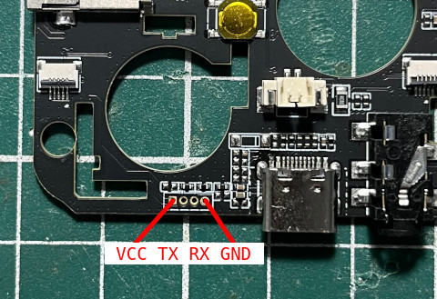
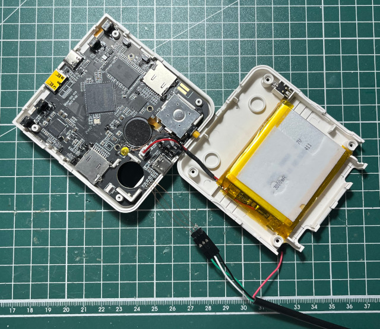
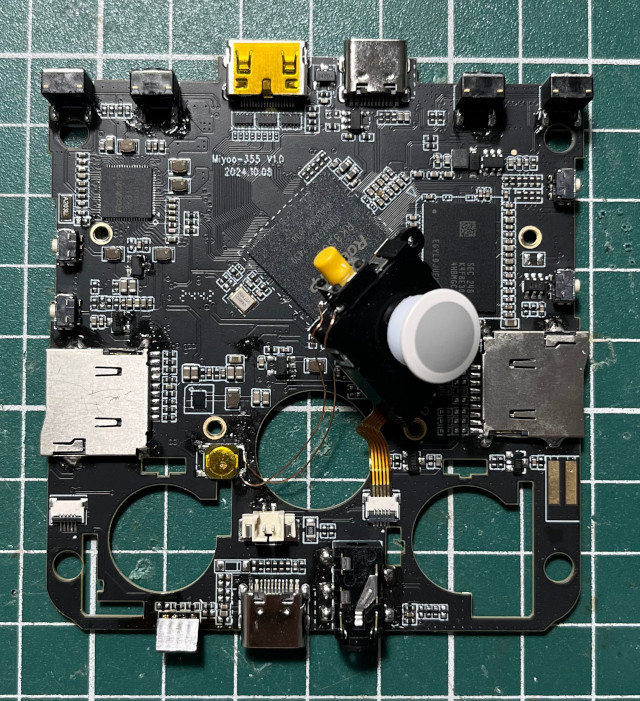
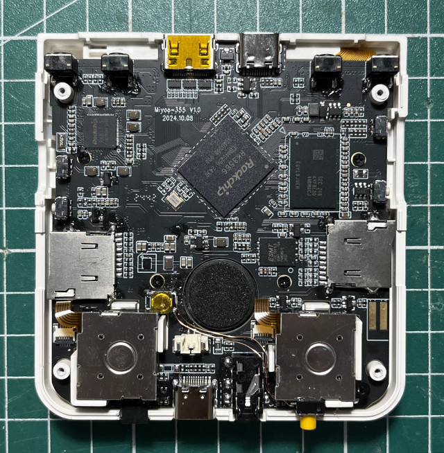
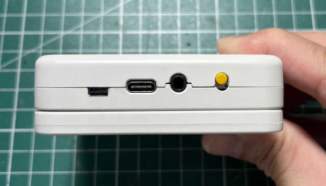
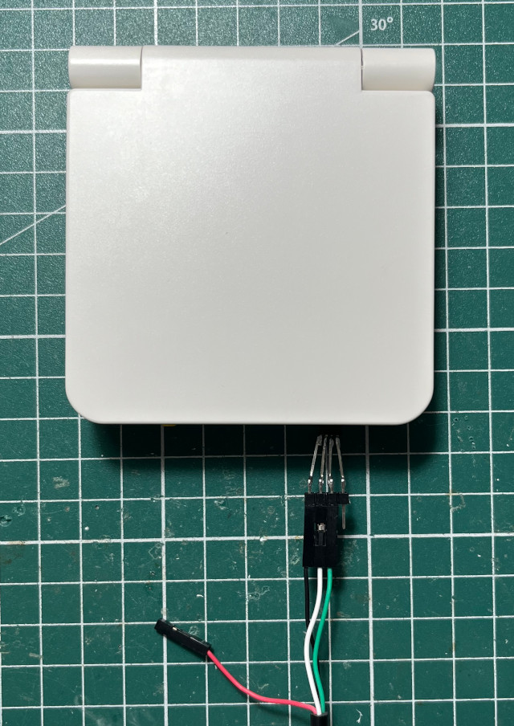

Steward
分享是一種喜悅、更是一種幸福
掌機 - Miyoo Flip - 焊接UART腳位
腳位

跳線

為了可以更方便Debug，司徒決定焊接一個母座

安座完成

還可以

更方便的Debug方式

Baudrate 1500000bps
DDR V1.18 f366f69a7d typ 23/07/17-15:48:58
ln
LP4/4x derate en, other dram:1x trefi
ddrconfig:0
LP4 MR14:0x4d
LPDDR4, 324MHz
BW=32 Col=10 Bk=8 CS0 Row=15 CS=1 Die BW=16 Size=1024MB
tdqss: cs0 dqs0: 24ps, dqs1: -120ps, dqs2: -72ps, dqs3: -168ps,
change to: 324MHz
clk skew:0x62
change to: 528MHz
clk skew:0x58
change to: 780MHz
clk skew:0x58
change to: 1056MHz(final freq)
PHY drv:clk:38,ca:38,DQ:30,odt:60
vrefinner:16%, vrefout:29%
dram drv:40,odt:80
vref_ca:00000068
clk skew:0x42
cs 0:
the read training result:
DQS0:0x3d, DQS1:0x3a, DQS2:0x3b, DQS3:0x39,
min : 0xd 0xd 0xf 0xd 0x1 0x5 0x5 0x2 , 0x7 0x7 0x5 0x1 0x9 0x9 0xe 0x8 ,
0xd 0xb 0xc 0x8 0x1 0x3 0x3 0x4 , 0x9 0x7 0x7 0x2 0xf 0x10 0xd 0xd ,
mid :0x2a 0x2a 0x2c 0x2a 0x1e 0x22 0x24 0x21 ,0x24 0x26 0x22 0x1f 0x26 0x27 0x2b 0x26 ,
0x2a 0x28 0x29 0x26 0x1e 0x20 0x1f 0x21 ,0x25 0x24 0x24 0x1f 0x2c 0x2c 0x2b 0x2a ,
max :0x48 0x48 0x49 0x47 0x3c 0x3f 0x44 0x40 ,0x42 0x45 0x40 0x3e 0x44 0x45 0x48 0x45 ,
0x47 0x46 0x46 0x44 0x3c 0x3d 0x3c 0x3f ,0x42 0x41 0x42 0x3c 0x4a 0x48 0x4a 0x47 ,
range:0x3b 0x3b 0x3a 0x3a 0x3b 0x3a 0x3f 0x3e ,0x3b 0x3e 0x3b 0x3d 0x3b 0x3c 0x3a 0x3d ,
0x3a 0x3b 0x3a 0x3c 0x3b 0x3a 0x39 0x3b ,0x39 0x3a 0x3b 0x3a 0x3b 0x38 0x3d 0x3a ,
the write training result:
DQS0:0x45, DQS1:0x32, DQS2:0x39, DQS3:0x2c,
min :0x58 0x5b 0x5b 0x58 0x50 0x52 0x53 0x55 0x52 ,0x44 0x48 0x42 0x3f 0x48 0x49 0x4d 0x4c 0x47 ,
0x4c 0x4c 0x4b 0x49 0x42 0x43 0x43 0x49 0x47 ,0x36 0x38 0x36 0x34 0x42 0x44 0x42 0x45 0x3b ,
mid :0x74 0x76 0x77 0x74 0x6b 0x6c 0x6f 0x6f 0x6d ,0x60 0x62 0x5d 0x5a 0x63 0x62 0x66 0x66 0x60 ,
0x69 0x69 0x68 0x65 0x5e 0x5c 0x5d 0x62 0x62 ,0x54 0x54 0x53 0x50 0x5d 0x60 0x5c 0x60 0x56 ,
max :0x90 0x91 0x93 0x90 0x87 0x87 0x8c 0x8a 0x88 ,0x7d 0x7d 0x78 0x76 0x7e 0x7c 0x80 0x80 0x79 ,
0x87 0x87 0x85 0x82 0x7a 0x76 0x77 0x7b 0x7d ,0x73 0x71 0x70 0x6c 0x79 0x7d 0x77 0x7b 0x72 ,
range:0x38 0x36 0x38 0x38 0x37 0x35 0x39 0x35 0x36 ,0x39 0x35 0x36 0x37 0x36 0x33 0x33 0x34 0x32 ,
0x3b 0x3b 0x3a 0x39 0x38 0x33 0x34 0x32 0x36 ,0x3d 0x39 0x3a 0x38 0x37 0x39 0x35 0x36 0x37 ,
CA Training result:
cs:0 min :0x47 0x3f 0x41 0x34 0x40 0x33 0x3f ,0x47 0x3a 0x3a 0x34 0x3a 0x2e 0x3b ,
cs:0 mid :0x82 0x81 0x7c 0x78 0x7a 0x77 0x6a ,0x80 0x7d 0x74 0x76 0x73 0x71 0x64 ,
cs:0 max :0xbe 0xc4 0xb7 0xbc 0xb4 0xbc 0x95 ,0xb9 0xc0 0xae 0xb8 0xad 0xb5 0x8e ,
cs:0 range:0x77 0x85 0x76 0x88 0x74 0x89 0x56 ,0x72 0x86 0x74 0x84 0x73 0x87 0x53 ,
out
U-Boot SPL board init
U-Boot SPL 2017.09 (Nov 02 2024 - 15:59:04)
unrecognized JEDEC id bytes: ff, c8, 01
Trying to boot from MMC2
Card did not respond to voltage select!
mmc_init: -95, time 9
spl: mmc init failed with error: -95
Trying to boot from MMC1
Card did not respond to voltage select!
mmc_init: -95, time 13
spl: mmc init failed with error: -95
Trying to boot from MTD1
No misc partition
Trying fit image at 0x1800 sector
## Verified-boot: 0
## Checking atf-1 0x00040000 ... sha256(0d5225a4ab...) + OK
## Checking uboot 0x00a00000 ... sha256(6b05ca538b...) + OK
## Checking fdt 0x00b42560 ... sha256(036cca5880...) + OK
## Checking atf-2 0xfdcc1000 ... sha256(3e94d16e6a...) + OK
## Checking atf-3 0x0006b000 ... sha256(fde0ef262b...) + OK
## Checking atf-4 0xfdcce000 ... sha256(c9eb312bf2...) + OK
## Checking atf-5 0xfdcd0000 ... sha256(befba422b8...) + OK
## Checking atf-6 0x00069000 ... sha256(6ede7a3b44...) + OK
## Checking optee 0x08400000 ... sha256(4fcbcd3870...) + OK
Jumping to U-Boot(0x00a00000) via ARM Trusted Firmware(0x00040000)
Total: 255.344/395.66 ms
INFO: Preloader serial: 2
NOTICE: BL31: v2.3():v2.3-607-gbf602aff1:cl
NOTICE: BL31: Built : 10:16:03, Jun 5 2023
INFO: GICv3 without legacy support detected.
INFO: ARM GICv3 driver initialized in EL3
INFO: pmu v1 is valid 220114
INFO: dfs DDR fsp_param[0].freq_mhz= 1056MHz
INFO: dfs DDR fsp_param[1].freq_mhz= 324MHz
INFO: dfs DDR fsp_param[2].freq_mhz= 528MHz
INFO: dfs DDR fsp_param[3].freq_mhz= 780MHz
INFO: Using opteed sec cpu_context!
INFO: boot cpu mask: 0
INFO: BL31: Initializing runtime services
INFO: BL31: Initializing BL32
I/TC:
I/TC: OP-TEE version: 3.13.0-723-gdcfdd61d0 #hisping.lin (gcc version 10.2.1 20201103 (GNU Toolchain for the A-profile Architecture 10.2-2020.11 (arm-10.16))) #2 Wed Jun 7 09:43:57 CST 2023 aarch64
I/TC: Primary CPU initializing
I/TC: Primary CPU switching to normal world boot
INFO: BL31: Preparing for EL3 exit to normal world
INFO: Entry point address = 0xa00000
INFO: SPSR = 0x3c9
U-Boot 2017.09 (Nov 02 2024 - 15:59:04 +0800)
Model: Rockchip RK3568 Evaluation Board
MPIDR: 0x81000000
PreSerial: 2, raw, 0xfe660000
DRAM: 1006 MiB
Sysmem: init
Relocation Offset: 3d21d000
Relocation fdt: 3b9f9248 - 3b9fece8
CR: M/C/I
Using default environment
Hotkey: ctrl+`
DM: v1
reg_boot_mode=0x00000000
g_miyoo_use_hdmi=0
rockchip_read_resource_dtb:rk-kernel.dtb
Bootdev(atags): mtd 1
PartType: EFI
No misc partition
[u-boot] boot mode: None
RESC: 'boot', blk@0x0000af18
optee api revision: 2.0
TEEC: Waring: Could not find security partition
lib/avb/libavb_user/avb_ops_user.c: trusty_read_lock_state failed
Error determining whether device is unlocked.
Device is: UNLOCKED
hdr->e_nums=3
et->name rk-kernel.dtb, et->tag ENTRrk-kernel.dtb
et->name logo.bmp, et->tag ENTRlogo.bmp
et->name logo_kernel.bmp, et->tag ENTRlogo_kernel.bmp
resource DTB: rk-kernel.dtb
HASH(c): OK
I2c0 speed: 100000Hz
PMIC: RK8170 (on=0x80, off=0x00)
vdd_logic init 900000 uV
vdd_gpu init 900000 uV
io-domain: OK
INFO: ddr dmc_fsp already initialized in loader.
Could not find baseparameter partition
Model: MIYOO RK3566 355 V10 Board
MPIDR: 0x81000000
Can't find Charging LED -19
Can't find Charging-Full LED -19
Device 'gpio@fdd60000': seq 0 is in use by 'gpio0@fdd60000'
gpio_request 0
gpio_request 0
Enable charge animation display
Exit charge: due to charger offline
Rockchip UBOOT DRM driver version: v1.0.1
VOP have 2 active VP
vp0 have layer nr:3[1 3 5 ], primary plane: 5
vp1 have layer nr:3[0 2 4 ], primary plane: 4
vp2 have layer nr:0[], primary plane: 0
rockchip_connector_path_detect:dsi@fe060000
[dsi@fe060000] connected
Using display timing dts
dsi@fe060000: detailed mode clock 32000 kHz, flags[a]
H: 0640 0790 0910 1030
V: 0480 0500 0506 0518
bus_format: 100e
VOP update mode to: 640x480p60, type: MIPI0 for VP1
VP1 set crtc_clock to 32000KHz
VOP VP1 enable Smart0[480x198->480x198@80x141] fmt[1] addr[0x3df46000]
final DSI-Link bandwidth: 426 Mbps x 2
rockchip_connector_path_detect:hdmi@fe0a0000
hdmi@fe0a0000 disconnected
CLK: (sync kernel. arm: enter 816000 KHz, init 816000 KHz, kernel 0N/A)
apll 1104000 KHz
dpll 528000 KHz
gpll 1188000 KHz
cpll 1000000 KHz
npll 1200000 KHz
vpll 608000 KHz
hpll 24000 KHz
ppll 200000 KHz
armclk 1104000 KHz
aclk_bus 150000 KHz
pclk_bus 100000 KHz
aclk_top_high 500000 KHz
aclk_top_low 400000 KHz
hclk_top 150000 KHz
pclk_top 100000 KHz
aclk_perimid 300000 KHz
hclk_perimid 150000 KHz
pclk_pmu 100000 KHz
Net: No ethernet found.
Hit key to stop autoboot('CTRL+C'): 0
Could not find misc partition
ANDROID: reboot reason: "(none)"
Not AVB images, AVB skip
ANDROID: Hash OK
Booting LZ4 kernel at 0x04080000(Uncompress to 0x00280000) with fdt at 0x08300000...
Fdt Ramdisk skip relocation
No misc partition
## Booting Android Image at 0x0407f800 ...
Kernel: 0x00280000 - 0x0116204c (15241 KiB)
## Flattened Device Tree blob at 0x08300000
Booting using the fdt blob at 0x08300000
Uncompressing LZ4 Kernel Image from 0x04080000 to 0x00280000 ... with 022c0a00 bytes OK
kernel loaded at 0x00280000, end = 0x02540a00
Using Device Tree in place at 0000000008300000, end 000000000831abb9
vp1 adjust cursor plane from 0 to 1
vp0, plane_mask:0x2a, primary-id:5, curser-id:1
vp1, plane_mask:0x15, primary-id:4, curser-id:-1
vp2, plane_mask:0x0, primary-id:0, curser-id:-1
WARNING: could not set reg FDT_ERR_BADOFFSET.
## reserved-memory:
drm-logo@00000000: addr=3df00000 size=118000
drm-cubic-lut@00000000: addr=3ff00000 size=8000
ramoops@110000: addr=110000 size=f0000
Adding bank: 0x00200000 - 0x08400000 (size: 0x08200000)
Adding bank: 0x09400000 - 0x40000000 (size: 0x36c00000)
== DO RELOCATE == Kernel from 0x00280000 to 0x00200000
Total: 2818.618/2863.229 ms
Starting kernel ...
[ 2.868015] Booting Linux on physical CPU 0x0000000000 [0x412fd050]
[ 2.868039] Linux version 5.10.160 (raymanfeng@nuc) (aarch64-none-linux-gnu-gcc (GNU Toolchain for the A-profile Architecture 10.3-2021.07 (arm-10.29)) 10.3.1 20210621, GNU ld (GNU Toolchain for the A-profil4
[ 2.871526] Machine model: MIYOO RK3566 355 V10 Board
[ 2.871590] earlycon: uart8250 at MMIO32 0x00000000fe660000 (options '')
[ 2.875780] printk: bootconsole [uart8250] enabled
[ 2.876995] efi: UEFI not found.
[ 2.897019] Zone ranges:
[ 2.897276] DMA [mem 0x0000000000200000-0x000000003fffffff]
[ 2.897862] DMA32 empty
[ 2.898137] Normal empty
[ 2.898411] Movable zone start for each node
[ 2.898812] Early memory node ranges
[ 2.899151] node 0: [mem 0x0000000000200000-0x00000000083fffff]
[ 2.899743] node 0: [mem 0x0000000009400000-0x000000003fffffff]
[ 2.900336] Initmem setup node 0 [mem 0x0000000000200000-0x000000003fffffff]
[ 2.908645] cma: Reserved 16 MiB at 0x000000003cc00000
[ 2.909210] psci: probing for conduit method from DT.
[ 2.909699] psci: PSCIv1.1 detected in firmware.
[ 2.910135] psci: Using standard PSCI v0.2 function IDs
[ 2.910630] psci: Trusted OS migration not required
[ 2.911094] psci: SMC Calling Convention v1.2
[ 2.911896] percpu: Embedded 30 pages/cpu s83480 r8192 d31208 u122880
[ 2.912611] Detected VIPT I-cache on CPU0
[ 2.913027] CPU features: detected: GIC system register CPU interface
[ 2.913635] CPU features: detected: Virtualization Host Extensions
[ 2.914223] CPU features: detected: ARM errata 1165522, 1319367, or 1530923
[ 2.914886] alternatives: patching kernel code
[ 2.917177] Built 1 zonelists, mobility grouping on. Total pages: 253448
[ 2.917826] Kernel command line: storagemedia=mtd androidboot.storagemedia=mtd androidboot.mode=normal androidboot.verifiedbootstate=orange androidboot.serialno=9f02cbf1f11e3305 rootwait earlycon=uart8250,)
[ 2.921900] Dentry cache hash table entries: 131072 (order: 8, 1048576 bytes, linear)
[ 2.922761] Inode-cache hash table entries: 65536 (order: 7, 524288 bytes, linear)
[ 2.923476] mem auto-init: stack:off, heap alloc:off, heap free:off
[ 2.936753] Memory: 955404K/1030144K available (18880K kernel code, 3586K rwdata, 6344K rodata, 6656K init, 564K bss, 58356K reserved, 16384K cma-reserved)
[ 2.938183] SLUB: HWalign=64, Order=0-3, MinObjects=0, CPUs=4, Nodes=1
[ 2.938829] ftrace: allocating 59096 entries in 231 pages
[ 3.015763] ftrace: allocated 231 pages with 6 groups
[ 3.016565] rcu: Hierarchical RCU implementation.
[ 3.017019] rcu: RCU event tracing is enabled.
[ 3.017447] rcu: RCU restricting CPUs from NR_CPUS=8 to nr_cpu_ids=4.
[ 3.018063] Rude variant of Tasks RCU enabled.
[ 3.018492] rcu: RCU calculated value of scheduler-enlistment delay is 30 jiffies.
[ 3.019205] rcu: Adjusting geometry for rcu_fanout_leaf=16, nr_cpu_ids=4
[ 3.024388] NR_IRQS: 64, nr_irqs: 64, preallocated irqs: 0
[ 3.025913] GICv3: GIC: Using split EOI/Deactivate mode
[ 3.026417] GICv3: 320 SPIs implemented
[ 3.026779] GICv3: 0 Extended SPIs implemented
[ 3.027231] GICv3: Distributor has no Range Selector support
[ 3.027771] GICv3: 16 PPIs implemented
[ 3.028160] GICv3: CPU0: found redistributor 0 region 0:0x00000000fd460000
[ 3.028923] ITS [mem 0xfd440000-0xfd45ffff]
[ 3.029407] ITS@0x00000000fd440000: allocated 8192 Devices @29d0000 (indirect, esz 8, psz 64K, shr 0)
[ 3.030306] ITS@0x00000000fd440000: allocated 32768 Interrupt Collections @29e0000 (flat, esz 2, psz 64K, shr 0)
[ 3.031268] ITS: using cache flushing for cmd queue
[ 3.031978] GICv3: using LPI property table @0x00000000029f0000
[ 3.032647] GIC: using cache flushing for LPI property table
[ 3.033186] GICv3: CPU0: using allocated LPI pending table @0x0000000002a00000
[ 3.061648] arch_timer: cp15 timer(s) running at 24.00MHz (phys).
[ 3.062239] clocksource: arch_sys_counter: mask: 0xffffffffffffff max_cycles: 0x588fe9dc0, max_idle_ns: 440795202592 ns
[ 3.063259] sched_clock: 56 bits at 24MHz, resolution 41ns, wraps every 4398046511097ns
[ 3.064684] Console: colour dummy device 80x25
[ 3.065173] Calibrating delay loop (skipped), value calculated using timer frequency.. 48.00 BogoMIPS (lpj=80000)
[ 3.066147] pid_max: default: 32768 minimum: 301
[ 3.066707] Mount-cache hash table entries: 2048 (order: 2, 16384 bytes, linear)
[ 3.067411] Mountpoint-cache hash table entries: 2048 (order: 2, 16384 bytes, linear)
[ 3.069568] rcu: Hierarchical SRCU implementation.
[ 3.070714] Platform MSI: interrupt-controller@fd440000 domain created
[ 3.071629] PCI/MSI: /interrupt-controller@fd400000/interrupt-controller@fd440000 domain created
[ 3.072704] EFI services will not be available.
[ 3.073424] smp: Bringing up secondary CPUs ...
I/TC: Secondary CPU 1 initializing
I/TC: Secondary CPU 1 switching to normal world boot
I/TC: Secondary CPU 2 initializing
I/TC: Secondary CPU 2 switching to normal world boot
I/TC: Secondary CPU 3 initializing
I/TC: Secondary CPU 3 switching to normal world boot
[ 3.075125] Detected VIPT I-cache on CPU1
[ 3.075155] GICv3: CPU1: found redistributor 100 region 0:0x00000000fd480000
[ 3.075175] GICv3: CPU1: using allocated LPI pending table @0x0000000002a10000
[ 3.075226] CPU1: Booted secondary processor 0x0000000100 [0x412fd050]
[ 3.076551] Detected VIPT I-cache on CPU2
[ 3.076575] GICv3: CPU2: found redistributor 200 region 0:0x00000000fd4a0000
[ 3.076591] GICv3: CPU2: using allocated LPI pending table @0x0000000002a20000
[ 3.076629] CPU2: Booted secondary processor 0x0000000200 [0x412fd050]
[ 3.077888] Detected VIPT I-cache on CPU3
[ 3.077909] GICv3: CPU3: found redistributor 300 region 0:0x00000000fd4c0000
[ 3.077925] GICv3: CPU3: using allocated LPI pending table @0x0000000002a30000
[ 3.077958] CPU3: Booted secondary processor 0x0000000300 [0x412fd050]
[ 3.078049] smp: Brought up 1 node, 4 CPUs
[ 3.085449] SMP: Total of 4 processors activated.
[ 3.085894] CPU features: detected: Privileged Access Never
[ 3.086419] CPU features: detected: User Access Override
[ 3.086921] CPU features: detected: 32-bit EL0 Support
[ 3.087423] CPU features: detected: Common not Private translations
[ 3.088015] CPU features: detected: RAS Extension Support
[ 3.088524] CPU features: detected: Data cache clean to the PoU not required for I/D coherence
[ 3.089334] CPU features: detected: CRC32 instructions
[ 3.089817] CPU features: detected: Speculative Store Bypassing Safe (SSBS)
[ 3.090473] CPU features: detected: RCpc load-acquire (LDAPR)
[ 3.091092] CPU: All CPU(s) started at EL2
[ 3.092451] devtmpfs: initialized
[ 3.105105] Registered cp15_barrier emulation handler
[ 3.105601] Registered setend emulation handler
[ 3.106185] clocksource: jiffies: mask: 0xffffffff max_cycles: 0xffffffff, max_idle_ns: 6370867519511994 ns
[ 3.107113] futex hash table entries: 1024 (order: 4, 65536 bytes, linear)
[ 3.108255] pinctrl core: initialized pinctrl subsystem
[ 3.109278] DMI not present or invalid.
[ 3.110030] NET: Registered protocol family 16
[ 3.112052] DMA: preallocated 128 KiB GFP_KERNEL pool for atomic allocations
[ 3.112853] DMA: preallocated 128 KiB GFP_KERNEL|GFP_DMA pool for atomic allocations
[ 3.115044] Registered FIQ tty driver
[ 3.115732] thermal_sys: Registered thermal governor 'fair_share'
[ 3.115737] thermal_sys: Registered thermal governor 'step_wise'
[ 3.116314] thermal_sys: Registered thermal governor 'user_space'
[ 3.116881] thermal_sys: Registered thermal governor 'power_allocator'
[ 3.117681] thermal thermal_zone1: power_allocator: sustainable_power will be estimated
[ 3.119114] cpuidle: using governor menu
[ 3.119773] hw-breakpoint: found 6 breakpoint and 4 watchpoint registers.
[ 3.120533] ASID allocator initialised with 65536 entries
[ 3.123070] ramoops: dmesg-0 0x20000@0x0000000000110000
[ 3.123583] ramoops: console 0x80000@0x0000000000130000
[ 3.124086] ramoops: pmsg 0x50000@0x00000000001b0000
[ 3.124894] printk: console [ramoops-1] enabled
[ 3.125323] pstore: Registered ramoops as persistent store backend
[ 3.125924] ramoops: using 0xf0000@0x110000, ecc: 0
[ 3.151491] rockchip-gpio fdd60000.gpio0: probed /pinctrl/gpio0@fdd60000
[ 3.152578] rockchip-gpio fe740000.gpio1: probed /pinctrl/gpio1@fe740000
[ 3.153654] rockchip-gpio fe750000.gpio2: probed /pinctrl/gpio2@fe750000
[ 3.154692] rockchip-gpio fe760000.gpio3: probed /pinctrl/gpio3@fe760000
[ 3.155762] rockchip-gpio fe770000.gpio4: probed /pinctrl/gpio4@fe770000
[ 3.156462] rockchip-pinctrl pinctrl: probed pinctrl
[ 3.191634] fiq_debugger fiq_debugger.0: IRQ fiq not found
[ 3.192174] fiq_debugger fiq_debugger.0: IRQ wakeup not found
[ 3.192726] fiq_debugger_probe: could not install nmi irq handler
[[ 3.193385] printk: console [ttyFIQ0] enabled
3.193385] printk: console [ttyFIQ0] enabled
[ 3.194201] printk: bootconsole [uart8250] disabled
[ 3.194201] printk: bootconsole [uart8250] disabled
[ 3.194836] Registered fiq debugger ttyFIQ0
[ 3.195850] vcc5v0_host: supplied by vcc5v0_usb
[ 3.197119] iommu: Default domain type: Translated
[ 3.200258] vgaarb: loaded
[ 3.200587] SCSI subsystem initialized
[ 3.200758] usbcore: registered new interface driver usbfs
[ 3.200798] usbcore: registered new interface driver hub
[ 3.200834] usbcore: registered new device driver usb
[ 3.200942] mc: Linux media interface: v0.10
[ 3.200969] videodev: Linux video capture interface: v2.00
[ 3.201040] pps_core: LinuxPPS API ver. 1 registered
[ 3.201049] pps_core: Software ver. 5.3.6 - Copyright 2005-2007 Rodolfo Giometti <giometti@linux.it>
[ 3.201065] PTP clock support registered
[ 3.201701] arm-scmi firmware:scmi: SCMI Notifications - Core Enabled.
[ 3.201768] arm-scmi firmware:scmi: SCMI Protocol v2.0 'rockchip:' Firmware version 0x0
[ 3.203405] Advanced Linux Sound Architecture Driver Initialized.
[ 3.203805] Bluetooth: Core ver 2.22
[ 3.203844] NET: Registered protocol family 31
[ 3.203853] Bluetooth: HCI device and connection manager initialized
[ 3.203867] Bluetooth: HCI socket layer initialized
[ 3.203881] Bluetooth: L2CAP socket layer initialized
[ 3.203900] Bluetooth: SCO socket layer initialized
[ 3.204404] rockchip-cpuinfo cpuinfo: SoC : 35663000
[ 3.204417] rockchip-cpuinfo cpuinfo: Serial : 7a26cc63da229b02
[ 3.205131] clocksource: Switched to clocksource arch_sys_counter
[ 3.624985] NET: Registered protocol family 2
[ 3.625192] IP idents hash table entries: 16384 (order: 5, 131072 bytes, linear)
[ 3.626008] tcp_listen_portaddr_hash hash table entries: 512 (order: 1, 8192 bytes, linear)
[ 3.626040] TCP established hash table entries: 8192 (order: 4, 65536 bytes, linear)
[ 3.626090] TCP bind hash table entries: 8192 (order: 5, 131072 bytes, linear)
[ 3.626197] TCP: Hash tables configured (established 8192 bind 8192)
[ 3.626317] UDP hash table entries: 512 (order: 2, 16384 bytes, linear)
[ 3.626341] UDP-Lite hash table entries: 512 (order: 2, 16384 bytes, linear)
[ 3.626483] NET: Registered protocol family 1
[ 3.626919] RPC: Registered named UNIX socket transport module.
[ 3.626931] RPC: Registered udp transport module.
[ 3.626937] RPC: Registered tcp transport module.
[ 3.626943] RPC: Registered tcp NFSv4.1 backchannel transport module.
[ 3.627812] PCI: CLS 0 bytes, default 64
[ 3.630137] rockchip-thermal fe710000.tsadc: tsadc is probed successfully!
[ 3.631108] hw perfevents: enabled with armv8_cortex_a55 PMU driver, 7 counters available
[ 3.634883] Initialise system trusted keyrings
[ 3.635045] workingset: timestamp_bits=62 max_order=18 bucket_order=0
[ 3.638598] squashfs: version 4.0 (2009/01/31) Phillip Lougher
[ 3.639143] NFS: Registering the id_resolver key type
[ 3.639178] Key type id_resolver registered
[ 3.639186] Key type id_legacy registered
[ 3.639219] ntfs: driver 2.1.32 [Flags: R/O].
[ 3.639391] jffs2: version 2.2. (NAND) © 2001-2006 Red Hat, Inc.
[ 3.639633] fuse: init (API version 7.32)
[ 3.639898] SGI XFS with security attributes, no debug enabled
[ 3.671908] NET: Registered protocol family 38
[ 3.671936] Key type asymmetric registered
[ 3.671945] Asymmetric key parser 'x509' registered
[ 3.671990] Block layer SCSI generic (bsg) driver version 0.4 loaded (major 242)
[ 3.672001] io scheduler mq-deadline registered
[ 3.672008] io scheduler kyber registered
[ 3.680732] pwm-backlight backlight: supply power not found, using dummy regulator
[ 3.681341] iep: Module initialized.
[ 3.681405] mpp_service mpp-srv: unknown mpp version for missing VCS info
[ 3.681416] mpp_service mpp-srv: probe start
[ 3.683113] mpp_vdpu2 fdea0400.vdpu: Adding to iommu group 1
[ 3.683303] mpp_vdpu2 fdea0400.vdpu: probe device
[ 3.683788] mpp_vdpu2 fdea0400.vdpu: probing finish
[ 3.684250] mpp_vepu2 fdee0000.vepu: Adding to iommu group 3
[ 3.684427] mpp_vepu2 fdee0000.vepu: probing start
[ 3.684833] mpp_vepu2 fdee0000.vepu: probing finish
[ 3.685359] mpp-iep2 fdef0000.iep: Adding to iommu group 4
[ 3.685537] mpp-iep2 fdef0000.iep: probe device
[ 3.685797] mpp-iep2 fdef0000.iep: allocate roi buffer failed
[ 3.685992] mpp-iep2 fdef0000.iep: probing finish
[ 3.686443] mpp_jpgdec fded0000.jpegd: Adding to iommu group 2
[ 3.686608] mpp_jpgdec fded0000.jpegd: probe device
[ 3.687045] mpp_jpgdec fded0000.jpegd: probing finish
[ 3.688123] mpp_service mpp-srv: probe success
[ 3.692089] dma-pl330 fe530000.dmac: Loaded driver for PL330 DMAC-241330
[ 3.692122] dma-pl330 fe530000.dmac: DBUFF-128x8bytes Num_Chans-8 Num_Peri-32 Num_Events-16
[ 3.693784] dma-pl330 fe550000.dmac: Loaded driver for PL330 DMAC-241330
[ 3.693810] dma-pl330 fe550000.dmac: DBUFF-128x8bytes Num_Chans-8 Num_Peri-32 Num_Events-16
[ 3.694499] rockchip-pvtm fde00000.pvtm: pvtm@0 probed
[ 3.694634] rockchip-pvtm fde80000.pvtm: pvtm@1 probed
[ 3.694738] rockchip-pvtm fde90000.pvtm: pvtm@2 probed
[ 3.695290] rockchip-system-monitor rockchip-system-monitor: system monitor probe
[ 3.695802] arm-scmi firmware:scmi: Failed. SCMI protocol 22 not active.
[ 3.696052] Serial: 8250/16550 driver, 10 ports, IRQ sharing disabled
[ 3.696813] fe650000.serial: ttyS1 at MMIO 0xfe650000 (irq = 58, base_baud = 1500000) is a 16550A
[ 3.698843] random: crng init done
[ 3.699313] rockchip-vop2 fe040000.vop: Adding to iommu group 7
[ 3.705455] rockchip-vop2 fe040000.vop: [drm:vop2_bind] vp0 assign plane mask: 0x2a, primary plane phy id: 5
[ 3.705500] rockchip-vop2 fe040000.vop: [drm:vop2_bind] vp1 assign plane mask: 0x15, primary plane phy id: 4
[ 3.705512] rockchip-vop2 fe040000.vop: [drm:vop2_bind] vp2 assign plane mask: 0x0, primary plane phy id: -1
[ 3.705635] rockchip-vop2 fe040000.vop: [drm:vop2_bind] Cluster1-win0 as cursor plane for vp0
[ 3.705810] [drm] failed to init overlay plane Cluster0-win1
[ 3.705820] [drm] failed to init overlay plane Cluster1-win1
[ 3.705950] rockchip-drm display-subsystem: bound fe040000.vop (ops 0xffffffc00937fe90)
[ 3.706227] dwhdmi-rockchip fe0a0000.hdmi: Detected HDMI TX controller v2.11a with HDCP (DWC HDMI 2.0 TX PHY)
[ 3.706753] dwhdmi-rockchip fe0a0000.hdmi: registered DesignWare HDMI I2C bus driver
[ 3.706967] dwhdmi-rockchip fe0a0000.hdmi: IRQ index 1 not found
[ 3.707297] rockchip-drm display-subsystem: bound fe0a0000.hdmi (ops 0xffffffc00938e9f8)
[ 3.707327] dw-mipi-dsi-rockchip fe060000.dsi: failed to find panel or bridge: -517
[ 3.710877] panel-simple-dsi fe060000.dsi.0: failed to get power regulator: -517
[ 3.712018] cacheinfo: Unable to detect cache hierarchy for CPU 0
[ 3.712661] brd: module loaded
[ 3.717118] loop: module loaded
[ 3.717500] zram: Added device: zram0
[ 3.717714] lkdtm: No crash points registered, enable through debugfs
[ 3.720784] spi-nand spi4.0: esmt SPI NAND was found.
[ 3.720816] spi-nand spi4.0: 128 MiB, block size: 128 KiB, page size: 2048, OOB size: 64
[ 3.722322] 5 cmdlinepart partitions found on MTD device spi-nand0
[ 3.722340] Creating 5 MTD partitions on "spi-nand0":
[ 3.722353] 0x000000200000-0x000000300000 : "vnvm"
[ 3.723441] 0x000000300000-0x000000700000 : "uboot"
[ 3.724386] 0x000000700000-0x000002d00000 : "boot"
[ 3.725465] 0x000002d00000-0x000006d00000 : "rootfs"
[ 3.726554] 0x000006d00000-0x000007f60000 : "userdata"
[ 3.728191] RTW: module init start
[ 3.728215] RTW: rtl8733bu v5.13.0.1-112-g10248f4f3.20230626_COEX20230616-330e
[ 3.728222] RTW: build time: Aug 22 2024 11:30:41
[ 3.728228] RTW: rtl8733bu BT-Coex version = COEX20230616-330e
[ 3.728266] RTW: rtw_inetaddr_notifier_register
[ 3.728316] usbcore: registered new interface driver rtl8733bu
[ 3.728325] RTW: module init ret=0
[ 3.739345] ehci_hcd: USB 2.0 'Enhanced' Host Controller (EHCI) Driver
[ 3.739406] ehci-pci: EHCI PCI platform driver
[ 3.739487] ehci-platform: EHCI generic platform driver
[ 3.739913] phy phy-fe8b0000.usb2-phy.4: illegal mode
[ 3.741960] ehci-platform fd800000.usb: EHCI Host Controller
[ 3.742161] ehci-platform fd800000.usb: new USB bus registered, assigned bus number 1
[ 3.742279] ehci-platform fd800000.usb: irq 19, io mem 0xfd800000
[ 3.755155] ehci-platform fd800000.usb: USB 2.0 started, EHCI 1.00
[ 3.755346] usb usb1: New USB device found, idVendor=1d6b, idProduct=0002, bcdDevice= 5.10
[ 3.755358] usb usb1: New USB device strings: Mfr=3, Product=2, SerialNumber=1
[ 3.755367] usb usb1: Product: EHCI Host Controller
[ 3.755373] usb usb1: Manufacturer: Linux 5.10.160 ehci_hcd
[ 3.755380] usb usb1: SerialNumber: fd800000.usb
[ 3.755766] hub 1-0:1.0: USB hub found
[ 3.755803] hub 1-0:1.0: 1 port detected
[ 3.758444] ehci-platform fd880000.usb: EHCI Host Controller
[ 3.758616] ehci-platform fd880000.usb: new USB bus registered, assigned bus number 2
[ 3.758724] ehci-platform fd880000.usb: irq 21, io mem 0xfd880000
[ 3.771820] ehci-platform fd880000.usb: USB 2.0 started, EHCI 1.00
[ 3.771992] usb usb2: New USB device found, idVendor=1d6b, idProduct=0002, bcdDevice= 5.10
[ 3.772004] usb usb2: New USB device strings: Mfr=3, Product=2, SerialNumber=1
[ 3.772013] usb usb2: Product: EHCI Host Controller
[ 3.772020] usb usb2: Manufacturer: Linux 5.10.160 ehci_hcd
[ 3.772026] usb usb2: SerialNumber: fd880000.usb
[ 3.772377] hub 2-0:1.0: USB hub found
[ 3.772413] hub 2-0:1.0: 1 port detected
[ 3.773016] ohci_hcd: USB 1.1 'Open' Host Controller (OHCI) Driver
[ 3.773040] ohci-pci: OHCI PCI platform driver
[ 3.773113] ohci-platform: OHCI generic platform driver
[ 3.773404] phy phy-fe8b0000.usb2-phy.4: illegal mode
[ 3.773422] ohci-platform fd840000.usb: Generic Platform OHCI controller
[ 3.773579] ohci-platform fd840000.usb: new USB bus registered, assigned bus number 3
[ 3.773684] ohci-platform fd840000.usb: irq 20, io mem 0xfd840000
[ 3.832614] usb usb3: New USB device found, idVendor=1d6b, idProduct=0001, bcdDevice= 5.10
[ 3.832634] usb usb3: New USB device strings: Mfr=3, Product=2, SerialNumber=1
[ 3.832643] usb usb3: Product: Generic Platform OHCI controller
[ 3.832649] usb usb3: Manufacturer: Linux 5.10.160 ohci_hcd
[ 3.832656] usb usb3: SerialNumber: fd840000.usb
[ 3.833030] hub 3-0:1.0: USB hub found
[ 3.833067] hub 3-0:1.0: 1 port detected
[ 3.833549] ohci-platform fd8c0000.usb: Generic Platform OHCI controller
[ 3.833699] ohci-platform fd8c0000.usb: new USB bus registered, assigned bus number 4
[ 3.833811] ohci-platform fd8c0000.usb: irq 22, io mem 0xfd8c0000
[ 3.892611] usb usb4: New USB device found, idVendor=1d6b, idProduct=0001, bcdDevice= 5.10
[ 3.892630] usb usb4: New USB device strings: Mfr=3, Product=2, SerialNumber=1
[ 3.892639] usb usb4: Product: Generic Platform OHCI controller
[ 3.892646] usb usb4: Manufacturer: Linux 5.10.160 ohci_hcd
[ 3.892653] usb usb4: SerialNumber: fd8c0000.usb
[ 3.893005] hub 4-0:1.0: USB hub found
[ 3.893045] hub 4-0:1.0: 1 port detected
[ 3.894114] xhci-hcd xhci-hcd.0.auto: xHCI Host Controller
[ 3.894294] xhci-hcd xhci-hcd.0.auto: new USB bus registered, assigned bus number 5
[ 3.894424] xhci-hcd xhci-hcd.0.auto: hcc params 0x0220fe64 hci version 0x110 quirks 0x0000200002010010
[ 3.894499] xhci-hcd xhci-hcd.0.auto: irq 71, io mem 0xfd000000
[ 3.894765] usb usb5: New USB device found, idVendor=1d6b, idProduct=0002, bcdDevice= 5.10
[ 3.894777] usb usb5: New USB device strings: Mfr=3, Product=2, SerialNumber=1
[ 3.894784] usb usb5: Product: xHCI Host Controller
[ 3.894792] usb usb5: Manufacturer: Linux 5.10.160 xhci-hcd
[ 3.894799] usb usb5: SerialNumber: xhci-hcd.0.auto
[ 3.895193] hub 5-0:1.0: USB hub found
[ 3.895231] hub 5-0:1.0: 1 port detected
[ 3.895509] xhci-hcd xhci-hcd.0.auto: xHCI Host Controller
[ 3.895649] xhci-hcd xhci-hcd.0.auto: new USB bus registered, assigned bus number 6
[ 3.895668] xhci-hcd xhci-hcd.0.auto: Host supports USB 3.0 SuperSpeed
[ 3.895728] usb usb6: We don't know the algorithms for LPM for this host, disabling LPM.
[ 3.895827] usb usb6: New USB device found, idVendor=1d6b, idProduct=0003, bcdDevice= 5.10
[ 3.895838] usb usb6: New USB device strings: Mfr=3, Product=2, SerialNumber=1
[ 3.895846] usb usb6: Product: xHCI Host Controller
[ 3.895853] usb usb6: Manufacturer: Linux 5.10.160 xhci-hcd
[ 3.895860] usb usb6: SerialNumber: xhci-hcd.0.auto
[ 3.896193] hub 6-0:1.0: USB hub found
[ 3.896226] hub 6-0:1.0: 1 port detected
[ 3.896617] usbcore: registered new interface driver cdc_acm
[ 3.896627] cdc_acm: USB Abstract Control Model driver for USB modems and ISDN adapters
[ 3.896860] usbcore: registered new interface driver uas
[ 3.896953] usbcore: registered new interface driver usb-storage
[ 3.897038] usbcore: registered new interface driver usbserial_generic
[ 3.897063] usbserial: USB Serial support registered for generic
[ 3.897101] usbcore: registered new interface driver cp210x
[ 3.897122] usbserial: USB Serial support registered for cp210x
[ 3.897175] usbcore: registered new interface driver ftdi_sio
[ 3.897196] usbserial: USB Serial support registered for FTDI USB Serial Device
[ 3.897314] usbcore: registered new interface driver keyspan
[ 3.897337] usbserial: USB Serial support registered for Keyspan - (without firmware)
[ 3.897357] usbserial: USB Serial support registered for Keyspan 1 port adapter
[ 3.897377] usbserial: USB Serial support registered for Keyspan 2 port adapter
[ 3.897396] usbserial: USB Serial support registered for Keyspan 4 port adapter
[ 3.897437] usbcore: registered new interface driver option
[ 3.897457] usbserial: USB Serial support registered for GSM modem (1-port)
[ 3.897609] usbcore: registered new interface driver oti6858
[ 3.897632] usbserial: USB Serial support registered for oti6858
[ 3.897675] usbcore: registered new interface driver pl2303
[ 3.897698] usbserial: USB Serial support registered for pl2303
[ 3.897742] usbcore: registered new interface driver qcserial
[ 3.897763] usbserial: USB Serial support registered for Qualcomm USB modem
[ 3.897822] usbcore: registered new interface driver sierra
[ 3.897845] usbserial: USB Serial support registered for Sierra USB modem
[ 3.899267] input: gpio-keys-polled as /devices/platform/gpio-keys-polled/input/input0
[ 3.899639] [Miyoo]miyooio init
[ 3.900210] usbcore: registered new interface driver xpad
[ 3.900323] usbcore: registered new interface driver usbtouchscreen
[ 3.901213] input: hall wake key as /devices/platform/hall-mh248/input/input1
[ 3.901397] mh248 hall-mh248: hall_mh248_probe success.
[ 3.901907] i2c /dev entries driver
[ 3.902973] fan53555-regulator 0-001c: Failed to get chip ID!
[ 3.903812] RK860 chip ID:88
[ 3.906331] vdd_cpu: supplied by vcc3v8_sys
[ 3.914134] rk808 0-0020: chip id: 0x8170
[ 3.914175] rk808 0-0020: No cache defaults, reading back from HW
[ 3.937848] rk808 0-0020: source: on=0x80, off=0x00
[ 3.937874] rk808 0-0020: support dcdc3 fb mode:-22, 1
[ 3.937886] rk808 0-0020: support pmic reset mode:0,0
[ 3.943172] rk808-regulator rk808-regulator: there is no dvs0 gpio
[ 3.943215] rk808-regulator rk808-regulator: there is no dvs1 gpio
[ 3.943633] vdd_logic: supplied by vcc3v8_sys
[ 3.944609] vdd_gpu: supplied by vcc3v8_sys
[ 3.945231] vcc_ddr: supplied by vcc3v8_sys
[ 3.946153] vcc_3v3: supplied by vcc3v8_sys
[ 3.946753] vcca1v8_pmu: supplied by vcc3v8_sys
[ 3.948181] vdda_0v9: supplied by vcc3v8_sys
[ 3.949273] vdda0v9_pmu: supplied by vcc3v8_sys
[ 3.950371] vccio_acodec: supplied by vcc3v8_sys
[ 3.951817] vccio_sd: supplied by vcc3v8_sys
[ 3.952901] vcc3v3_pmu: supplied by vcc3v8_sys
[ 3.954337] vcc_1v8: supplied by vcc3v8_sys
[ 3.955434] vcc1v8_dvp: supplied by vcc3v8_sys
[ 3.956516] vcc2v8_dvp: supplied by vcc3v8_sys
[ 3.957602] boost: Bringing 4700000uV into 5000000-5000000uV
[ 3.957973] boost: supplied by vcc3v8_sys
[ 3.959142] otg_switch: supplied by boost
[ 3.959398] rk817-battery rk817-battery: DMA mask not set
[ 3.959515] rk817-battery rk817-battery: fb_temperature missing!
[ 3.959526] rk817-battery rk817-battery: energy_mode missing!
[ 3.959535] rk817-battery rk817-battery: zero_reserve_dsoc missing!
[ 3.959545] rk817-battery rk817-battery: low_power_sleep missing!
[ 3.985862] rk817-bat: initialized yet..
[ 4.025153] usb 2-1: new high-speed USB device number 2 using ehci-platform
[ 4.032904] thermal thermal_zone2: power_allocator: sustainable_power will be estimated
[ 4.033319] rk817-charger rk817-charger: DMA mask not set
[ 4.033382] rk817-charger rk817-charger: power_dc2otg missing!
[ 4.033393] rk817-charger rk817-charger: sample_res missing!
[ 4.033400] rk817-charger rk817-charger: otg5v_suspend_enable missing!
[ 4.044909] input: rk805 pwrkey as /devices/platform/fdd40000.i2c/i2c-0/0-0020/rk805-pwrkey/input/input2
[ 4.051189] rk808-rtc rk808-rtc: registered as rtc0
[ 4.052913] rk808-rtc rk808-rtc: setting system clock to 2017-08-04T09:00:19 UTC (1501837219)
[ 4.172776] usb 2-1: New USB device found, idVendor=0bda, idProduct=b733, bcdDevice= 0.00
[ 4.172819] usb 2-1: New USB device strings: Mfr=1, Product=2, SerialNumber=3
[ 4.172828] usb 2-1: Product: 802.11n WLAN Adapter
[ 4.172836] usb 2-1: Manufacturer: Realtek
[ 4.172843] usb 2-1: SerialNumber: 7822886D823C
[ 4.173078] usbcore: registered new interface driver uvcvideo
[ 4.173091] USB Video Class driver (1.1.1)
[ 4.174397] RTW:
[ 4.174397] usb_endpoint_descriptor(0):
[ 4.174418] RTW: bLength=7
[ 4.174425] RTW: bDescriptorType=5
[ 4.174430] RTW: bEndpointAddress=84
[ 4.174436] RTW: wMaxPacketSize=512
[ 4.174441] RTW: bInterval=0
[ 4.174446] RTW: RT_usb_endpoint_is_bulk_in = 4
[ 4.174451] RTW:
[ 4.174451] usb_endpoint_descriptor(1):
[ 4.174456] RTW: bLength=7
[ 4.174461] RTW: bDescriptorType=5
[ 4.174465] RTW: bEndpointAddress=5
[ 4.174470] RTW: wMaxPacketSize=512
[ 4.174474] RTW: bInterval=0
[ 4.174479] RTW: RT_usb_endpoint_is_bulk_out = 5
[ 4.174484] RTW:
[ 4.174484] usb_endpoint_descriptor(2):
[ 4.174488] RTW: bLength=7
[ 4.174493] RTW: bDescriptorType=5
[ 4.174498] RTW: bEndpointAddress=6
[ 4.174502] RTW: wMaxPacketSize=512
[ 4.174506] RTW: bInterval=0
[ 4.174511] RTW: RT_usb_endpoint_is_bulk_out = 6
[ 4.174515] RTW:
[ 4.174515] usb_endpoint_descriptor(3):
[ 4.174520] RTW: bLength=7
[ 4.174525] RTW: bDescriptorType=5
[ 4.174529] RTW: bEndpointAddress=87
[ 4.174534] RTW: wMaxPacketSize=64
[ 4.174538] RTW: bInterval=3
[ 4.174543] RTW: RT_usb_endpoint_is_int_in = 7, Interval = 3
[ 4.174547] RTW:
[ 4.174547] usb_endpoint_descriptor(4):
[ 4.174552] RTW: bLength=7
[ 4.174556] RTW: bDescriptorType=5
[ 4.174561] RTW: bEndpointAddress=8
[ 4.174565] RTW: wMaxPacketSize=512
[ 4.174569] RTW: bInterval=0
[ 4.174574] RTW: RT_usb_endpoint_is_bulk_out = 8
[ 4.174579] RTW: nr_endpoint=5, in_num=2, out_num=3
[ 4.174579]
[ 4.174584] RTW: USB_SPEED_HIGH
[ 4.174590] RTW: CHIP TYPE: RTL8733B
[ 4.174662] RTW: [HALMAC]135
[ 4.174662] HALMAC_MAJOR_VER = 1
[ 4.174662] HALMAC_PROTOTYPE_VER = 6
[ 4.174662] HALMAC_MINOR_VER = 6
[ 4.174662] HALMAC_PATCH_VER = 39
[ 4.174679] Bluetooth: HCI UART driver ver 2.3
[ 4.174693] Bluetooth: HCI UART protocol H4 registered
[ 4.174701] Bluetooth: HCI UART protocol ATH3K registered
[ 4.174767] usbcore: registered new interface driver bfusb
[ 4.175388] RTW: Chip Version Info: CHIP_8733B_U4_1T1R_RomVer(3)
[ 4.175403] RTW: config_chip_out_EP OutEpQueueSel(0x07), OutEpNumber(3)
[ 4.175516] RTW: ERROR [HALMAC][ERR]Dump efuse in suspend
[ 4.303771] RTW: is_valid_id_status: HALMAC_FEATURE_DUMP_LOGICAL_EFUSE
[ 4.303821] RTW: HW EFUSE
[ 4.303835] RTW: 0x000: 29 81 80 86 10 00 84 00 B2 0D B4 14 08 94 8A 1B
[ 4.303869] RTW: 0x010: FF FF FF FF FF FF FF FF FF FF FF FF FF FF FF FF
[ 4.303901] RTW: 0x020: FF FF FD FD FE FE FD FD FB FD FE FE FE FE FE FE
[ 4.303932] RTW: 0x030: FF FF FF FF FF FF FF FF FF FF FF FF FF FF FF FF
[ 4.303963] RTW: 0x040: FF FF FF FF FF FF FF FF FF FF FF FF FF FF FF FF
[ 4.303993] RTW: 0x050: FF FF FF FF FF FF FF FF FF FF FF FF FF FF FF FF
[ 4.304025] RTW: 0x060: FF FF FF FF FF FF FF FF FF FF FF FF FF FF FF FF
[ 4.304055] RTW: 0x070: FF FF FF FF FF FF FF FF FF FF FF FF FF FF FF FF
[ 4.304085] RTW: 0x080: FF FF FF FF FF FF FF FF FF FF FF FF FF FF FF FF
[ 4.304116] RTW: 0x090: FF FF FF FF FF FF FF FF FF FF FF FF FF FF FF FF
[ 4.304148] RTW: 0x0A0: FF FF FF FF FF FF FF FF FF FF FF FF FF FF FF FF
[ 4.304178] RTW: 0x0B0: FF FF FF FF FF FF FF FF 7F 46 20 00 FF FF FF FF
[ 4.304209] RTW: 0x0C0: FF 31 00 11 00 00 00 00 40 11 04 FF FF FF FF FF
[ 4.304239] RTW: 0x0D0: FF FF FF FF FF FF FF FF FF FF FF FF FF FF FF FF
[ 4.304270] RTW: 0x0E0: FF FF FF FF FF FF FF FF FF FF FF FF FF FF FF FF
[ 4.304300] RTW: 0x0F0: FF FF FF FF FF FF FF FF FF FF FF FF FF FF FF FF
[ 4.304331] RTW: 0x100: DA 0B 33 B7 E0 66 02 00 78 22 88 6D 82 3C 09 03
[ 4.304361] RTW: 0x110: 52 65 61 6C 74 65 6B 17 03 38 30 32 2E 31 31 6E
[ 4.304392] RTW: 0x120: 20 20 57 4C 41 4E 20 41 64 61 70 74 65 72 0E 03
[ 4.304422] RTW: 0x130: 30 30 65 30 34 63 30 30 30 30 30 31 FF FF FF FF
[ 4.304452] RTW: 0x140: FF FF FF FF FF FF FF FF 00 00 00 0F FF FF FF FF
[ 4.304482] RTW: 0x150: 9F 38 7B 8D C2 58 90 C1 25 EF 00 00 00 11 06 66
[ 4.304513] RTW: 0x160: FC 8C 00 11 9B 15 00 0E FF FF FF FF FF FF FF FF
[ 4.304545] RTW: 0x170: FF FF FF FF FF FF FF FF FF FF FF FF FF FF FF FF
[ 4.304575] RTW: 0x180: FF FF FF FF FF FF FF FF FF FF FF FF FF FF FF FF
[ 4.304606] RTW: 0x190: FF FF FF FF FF FF FF FF FF FF FF FF FF FF FF FF
[ 4.304636] RTW: 0x1A0: FF FF FF FF FF FF FF FF FF FF FF FF FF FF FF FF
[ 4.304666] RTW: 0x1B0: FF FF FF FF FF FF FF FF FF FF FF FF FF FF FF FF
[ 4.304697] RTW: 0x1C0: FF FF FF FF FF FF FF FF FF FF FF FF FF FF FF FF
[ 4.304728] RTW: 0x1D0: FF FF FF FF FF FF FF FF FF FF FF FF FF FF FF FF
[ 4.304759] RTW: 0x1E0: D0 B0 58 59 32 07 55 46 46 00 A0 C4 63 DD 98 BB
[ 4.304790] RTW: 0x1F0: 14 05 24 E7 FF FF FF FF FF FF FF FF FF FF FF FF
[ 4.304821] RTW: 0x200: FF FF FF FF FF FF FF FF FF FF FF FF FF FF FF FF
[ 4.304852] RTW: 0x210: FF FF FF FF FF FF FF FF FF FF FF FF FF FF FF FF
[ 4.304882] RTW: 0x220: FF FF FF FF FF FF FF FF FF FF FF FF FF FF FF FF
[ 4.304913] RTW: 0x230: FF FF FF FF FF FF FF FF FF FF FF FF FF FF FF FF
[ 4.304943] RTW: 0x240: FF FF FF FF FF FF FF FF FF FF FF FF FF FF FF FF
[ 4.304973] RTW: 0x250: FF FF FF FF FF FF FF FF FF FF FF FF FF FF FF FF
[ 4.305003] RTW: 0x260: FF FF FF FF FF FF FF FF FF FF FF FF FF FF FF FF
[ 4.305035] RTW: 0x270: FF FF FF FF FF FF FF FF FF FF FF FF FF FF FF FF
[ 4.305065] RTW: 0x280: FF FF FF FF FF FF FF FF FF FF FF FF FF FF FF FF
[ 4.305096] RTW: 0x290: FF FF FF FF FF FF FF FF FF FF FF FF FF FF FF FF
[ 4.305152] RTW: 0x2A0: FF FF FF FF FF FF FF FF FF FF FF FF FF FF FF FF
[ 4.305183] RTW: 0x2B0: FF FF FF FF FF FF FF FF FF FF FF FF FF FF FF FF
[ 4.305215] RTW: 0x2C0: FF FF FF FF FF FF FF FF FF FF FF FF FF FF FF FF
[ 4.305245] RTW: 0x2D0: FF FF FF FF FF FF FF FF FF FF FF FF FF FF FF FF
[ 4.305275] RTW: 0x2E0: FF FF FF FF FF FF FF FF FF FF FF FF FF FF FF FF
[ 4.305306] RTW: 0x2F0: FF FF FF FF FF FF FF FF FF FF FF FF FF FF FF FF
[ 4.305338] RTW: check_phy_efuse_tx_power_info_valid: tpt_mode is TSSI, skip check
[ 4.305345] RTW: EEPROM ID = 0x8129
[ 4.305350] RTW: EEPROM Version = 0
[ 4.305360] RTW: Hal_EfuseParseTxPowerInfo tpt_mode=4, PG with TSSI_OFFSET
[ 4.305366] RTW: EEPROM Regulatory=0x01
[ 4.305372] RTW: EEPROM Board Type=0x01
[ 4.305377] RTW: EEPROM Enable BT-coex, ant_num=1
[ 4.305384] RTW: hal_com_config_channel_plan chplan:0x3E
[ 4.305390] RTW: EEPROM crystal_cap=0x46
[ 4.305395] RTW: EEPROM ThermalMeter=0x20
[ 4.305400] RTW: EEPROM efuse[0xc9]=0x11 is valid
[ 4.305405] RTW: EEPROM Customer ID=0x00
[ 4.305410] RTW: EEPROM SupportRemoteWakeup=0
[ 4.305416] RTW: EEPROM PAType_2G is 0x0, ExternalPA_2G = 0
[ 4.305421] RTW: EEPROM PAType_5G is 0x0, external_pa_5g = 0
[ 4.305426] RTW: EEPROM LNAType_2G is 0x0, ExternalLNA_2G = 0
[ 4.305431] RTW: EEPROM LNAType_5G is 0x0, external_lna_5g = 0
[ 4.305436] RTW: EEPROM TypeGPA = 0x0
[ 4.305440] RTW: EEPROM TypeAPA = 0x0
[ 4.305445] RTW: EEPROM TypeGLNA = 0x0
[ 4.305449] RTW: EEPROM TypeALNA = 0x0
[ 4.305454] RTW: EEPROM rfe_type=0x4
[ 4.305459] RTW: EEPROM USB Switch=0
[ 4.305464] RTW: EEPROM VID = 0x0BDA, PID = 0xB733
[ 4.315387] RTW: SetHwReg: bMacPwrCtrlOn=1
[ 4.317634] RTW: rtl8733b_fw_dl fw source from array
[ 4.416892] RTW: _rtw_hal_set_fw_rsvd_page((null)) Get [ NOR ] RsvdPageNUm ==>
[ 4.416911] RTW: LocPsPoll: 4
[ 4.416922] RTW: WARN Invalid rate 0x0 in MRateToHwRate
[ 4.416929] RTW: LocNullData: 5
[ 4.416937] RTW: WARN Invalid rate 0x0 in MRateToHwRate
[ 4.416943] RTW: LocQosNull: 6
[ 4.416949] RTW: WARN Invalid rate 0x0 in MRateToHwRate
[ 4.416955] RTW: LocBTQosNull: 7
[ 4.416961] RTW: WARN Invalid rate 0x0 in MRateToHwRate
[ 4.416968] RTW: _rtw_hal_set_fw_rsvd_page((null)) Get [ NOR ] RsvdPageNUm <==
[ 4.434509] RTW: rtl8733b_fw_dl Download Firmware from array success
[ 4.434529] RTW: NIC FW Version:1 SubVersion:25 FW size:122008
[ 4.436392] RTW: SetHwReg: bMacPwrCtrlOn=0
[ 4.444013] RTW: hal_read_mac_hidden_rpt OK! (1, 10ms), fwdl:1, id:0x19
[ 4.444033] RTW: rtw_hal_read_chip_info in 267 ms
[ 4.444055] RTW: [RF_PATH] ver_id.RF_TYPE:RF_1T1R
[ 4.444064] RTW: [RF_PATH] HALSPEC's rf_reg_trx_path_bmp:0x11, rf_reg_path_avail_num:1, max_tx_cnt:1
[ 4.444071] RTW: [RF_PATH] PG's trx_path_bmp:0x11, max_tx_cnt:0
[ 4.444077] RTW: [RF_PATH] Registry's trx_path_bmp:0x00, tx_path_lmt:0, rx_path_lmt:0
[ 4.444083] RTW: [RF_PATH] HALDATA's trx_path_bmp:0x11, max_tx_cnt:1
[ 4.444088] RTW: [RF_PATH] HALDATA's rf_type:RF_1T1R, NumTotalRFPath:1
[ 4.444095] RTW: rtw_hal_rfpath_init trx_path_bmp:0x11(RF_1T1R), NumTotalRFPath:1, max_tx_cnt:1
[ 4.444101] RTW: [TRX_Nss] HALSPEC - tx_nss:1, rx_nss:1
[ 4.444107] RTW: [TRX_Nss] Registry - tx_nss:0, rx_nss:0
[ 4.444112] RTW: [TRX_Nss] HALDATA - tx_nss:1, rx_nss:1
[ 4.444117] RTW: rtw_hal_trxnss_init tx_nss:1, rx_nss:1
[ 4.444124] RTW: txpath=0x1, rxpath=0x1
[ 4.444129] RTW: txpath_1ss:0x1, num:1
[ 4.444248] RTW: init_mlme_default_rate_set: support CCK
[ 4.444256] RTW: init_mlme_default_rate_set: support OFDM
[ 4.444721] RTW: NR_RECVBUFF: 8, recvbuf_nr: 8
[ 4.444731] RTW: MAX_RECVBUF_SZ: 32768
[ 4.444744] RTW: NR_PREALLOC_RECV_SKB: 8
[ 4.444909] RTW: rtw_alloc_macid((null)) if1, mac_addr:ff:ff:ff:ff:ff:ff macid:1
[ 4.444921] RTW: rtw_init_pwrctrl_priv: IPS_mode=0, LPS_mode=0, LPS_level=0
[ 4.444941] RTW: IQK FW offload:disable
[ 4.444954] RTW: init_phydm_cominfo: Fv=1 Cv=3
[ 4.444964] RTW: rtw_regsty_chk_target_tx_power_valid return _FALSE for band:0, path:0, rs:0, t:-1
[ 4.445031] RTW: phy_ConfigBBWithPgParaFile(): No File PHY_REG_PG.txt, Load from HWImg Array!
[ 4.445050] RTW: default power by rate loaded
[ 4.445072] RTW: init_channel_set_from_rtk_priv((null)) ChannelPlan ID:0x3e, ch num:37
[ 4.445626] RTW: can't get autopm:
[ 4.445640] RTW: rtw_macaddr_cfg mac addr:78:22:88:6d:82:3c
[ 4.445649] RTW: bDriverStopped:True, bSurpriseRemoved:False, bup:0, hw_init_completed:0
[ 4.445672] RTW: rtw_cfg80211_init_wiphy_band:rf_type=0
[ 4.445684] RTW: [HT] HAL Support LDPC = 0x02
[ 4.445691] RTW: [HT] HAL Support STBC = 0x01
[ 4.445709] RTW: [HT] HAL Support LDPC = 0x02
[ 4.445716] RTW: [HT] HAL Support STBC = 0x01
[ 4.445730] RTW: rtw_wiphy_alloc(phy0)
[ 4.445766] RTW: rtw_wdev_alloc(padapter=00000000cea9c74d)
[ 4.445776] RTW: rtw_wiphy_register(phy0)
[ 4.445783] RTW: Register RTW cfg80211 vendor cmd(0x67) interface
[ 4.445984] RTW: rtw_reg_notifier(phy0)
[ 4.445995] RTW: initiator:CORE, wiphy_idx:0, type:USER
[ 4.446001] RTW: alpha2:00
[ 4.446007] RTW: dfs_region:UNSET
[ 4.446012] RTW: intersect:0
[ 4.446017] RTW: processed:1
[ 4.446022] RTW: country_ie_env:ANY
[ 4.446132] RTW: rtw_ndev_init(wlan0) if1 mac_addr=78:22:88:6d:82:3c
[ 4.446332] RTW: rtw_ndev_notifier_call(wlan0) state:17
[ 4.446742] RTW: cfg80211_rtw_get_txpower(wlan0) total max: -10000 mbm
[ 4.446759] RTW: rtw_ndev_notifier_call(wlan0) state:5
[ 4.447414] usbcore: registered new interface driver btusb
[ 4.448002] cpu cpu0: leakage=22
[ 4.448107] cpu cpu0: pvtm = 88160, from nvmem
[ 4.448123] cpu cpu0: pvtm-volt-sel=2
[ 4.448940] Bluetooth: hci0: RTL: examining hci_ver=08 hci_rev=000f lmp_ver=08 lmp_subver=8723
[ 4.448956] Bluetooth: hci0: RTL: unknown IC info, lmp subver 8723, hci rev 000f, hci ver 0008
[ 4.448965] Bluetooth: hci0: RTL: assuming no firmware upload needed
[ 4.449792] cpu cpu0: avs=0
[ 4.450052] cpu cpu0: EM: created perf domain
[ 4.450115] cpu cpu0: l=0 h=2147483647 hyst=5000 l_limit=1800000000 h_limit=0 h_table=0
[ 4.456960] sdhci: Secure Digital Host Controller Interface driver
[ 4.456977] sdhci: Copyright(c) Pierre Ossman
[ 4.456985] Synopsys Designware Multimedia Card Interface Driver
[ 4.457848] sdhci-pltfm: SDHCI platform and OF driver helper
[ 4.458277] dwmmc_rockchip fe2b0000.dwmmc: No normal pinctrl state
[ 4.458289] dwmmc_rockchip fe2c0000.dwmmc: No normal pinctrl state
[ 4.458294] dwmmc_rockchip fe2c0000.dwmmc: No idle pinctrl state
[ 4.458304] dwmmc_rockchip fe2b0000.dwmmc: No idle pinctrl state
[ 4.458413] dwmmc_rockchip fe2c0000.dwmmc: IDMAC supports 32-bit address mode.
[ 4.458428] dwmmc_rockchip fe2b0000.dwmmc: IDMAC supports 32-bit address mode.
[ 4.458482] dwmmc_rockchip fe2b0000.dwmmc: Using internal DMA controller.
[ 4.458491] dwmmc_rockchip fe2c0000.dwmmc: Using internal DMA controller.
[ 4.458501] dwmmc_rockchip fe2c0000.dwmmc: Version ID is 270a
[ 4.458504] dwmmc_rockchip fe2b0000.dwmmc: Version ID is 270a
[ 4.458563] dwmmc_rockchip fe2b0000.dwmmc: DW MMC controller at irq 45,32 bit host data width,256 deep fifo
[ 4.458579] dwmmc_rockchip fe2c0000.dwmmc: DW MMC controller at irq 46,32 bit host data width,256 deep fifo
[ 4.460099] ledtrig-cpu: registered to indicate activity on CPUs
[ 4.460204] arm-scmi firmware:scmi: Failed. SCMI protocol 17 not active.
[ 4.460316] SMCCC: SOC_ID: ARCH_SOC_ID not implemented, skipping ....
[ 4.461362] cryptodev: driver 1.12 loaded.
[ 4.461435] hid: raw HID events driver (C) Jiri Kosina
[ 4.461921] usbcore: registered new interface driver usbhid
[ 4.461935] usbhid: USB HID core driver
[ 4.463111] rockchip,bus bus-npu: bin=0
[ 4.463139] rockchip,bus bus-npu: Failed to get leakage
[ 4.463199] rockchip,bus bus-npu: pvtm = 88160, from nvmem
[ 4.463217] rockchip,bus bus-npu: pvtm-volt-sel=1
[ 4.463481] rockchip,bus bus-npu: avs=0
[ 4.469855] mmc_host mmc1: Bus speed (slot 0) = 375000Hz (slot req 400000Hz, actual 375000HZ div = 0)
[ 4.471148] mmc_host mmc2: Bus speed (slot 0) = 375000Hz (slot req 400000Hz, actual 375000HZ div = 0)
[ 4.471278] usbcore: registered new interface driver snd-usb-audio
[ 4.473368] rk817-codec rk817-codec: DMA mask not set
[ 4.480138] rk-multicodecs rk817-sound: Failed to get ADC channel
[ 4.480296] rk-multicodecs rk817-sound: ASoC: Property 'rockchip,audio-routing' does not exist or its length is not even
[ 4.480308] rk-multicodecs rk817-sound: Audio routing invalid/unspecified
[ 4.481693] rk817-codec rk817-codec: rk817_probe: chip_name:0x81, chip_ver:0x75
[ 4.486746] rk-multicodecs rk817-sound: Don't need to map headset detect gpio to irq
[ 4.490328] Initializing XFRM netlink socket
[ 4.490761] NET: Registered protocol family 10
[ 4.491150] mmc0: SDHCI controller on fe310000.sdhci [fe310000.sdhci] using ADMA
[ 4.491698] Segment Routing with IPv6
[ 4.491764] NET: Registered protocol family 17
[ 4.491843] NET: Registered protocol family 15
[ 4.492128] Bluetooth: RFCOMM socket layer initialized
[ 4.492167] Bluetooth: RFCOMM ver 1.11
[ 4.492185] Bluetooth: HIDP (Human Interface Emulation) ver 1.2
[ 4.492199] Bluetooth: HIDP socket layer initialized
[ 4.492241] [BT_RFKILL]: Enter rfkill_rk_init
[ 4.492250] [WLAN_RFKILL]: Enter rfkill_wlan_init
[ 4.492731] [WLAN_RFKILL]: Enter rfkill_wlan_probe
[ 4.492782] [WLAN_RFKILL]: wlan_platdata_parse_dt: wifi_chip_type = rtl8733bu
[ 4.492793] [WLAN_RFKILL]: wlan_platdata_parse_dt: enable wifi power control.
[ 4.492800] [WLAN_RFKILL]: wlan_platdata_parse_dt: wifi power controled by gpio.
[ 4.492826] [WLAN_RFKILL]: wlan_platdata_parse_dt: WIFI,poweren_gpio = 0 flags = 1.
[ 4.492853] [WLAN_RFKILL]: wlan_platdata_parse_dt: The ref_wifi_clk not found !
[ 4.492861] [WLAN_RFKILL]: rfkill_wlan_probe: init gpio
[ 4.492871] [WLAN_RFKILL]: rfkill_set_wifi_bt_power: 1
[ 4.492880] [WLAN_RFKILL]: Exit rfkill_wlan_probe
[ 4.493363] Key type dns_resolver registered
[ 4.509480] mtd vendor storage:20200313 ret = 0
[ 4.510411] Loading compiled-in X.509 certificates
[ 4.512200] pstore: Using crash dump compression: deflate
[ 4.513062] rga: rga2, irq = 30, match scheduler
[ 4.513440] rga: rga2 hardware loaded successfully, hw_version:3.2.63318.
[ 4.513464] rga: rga2 probe successfully
[ 4.513696] rga_iommu: IOMMU binding successfully, default mapping core[0x4]
[ 4.513913] rga: Module initialized. v1.2.27
[ 4.531860] vcc3v3_lcd0_n: supplied by vcc_3v3
[ 4.533869] mpp_rkvenc fdf40000.rkvenc: Adding to iommu group 5
[ 4.534052] mpp_rkvenc fdf40000.rkvenc: probing start
[ 4.534357] mpp_rkvenc fdf40000.rkvenc: bin=0
[ 4.534370] mpp_rkvenc fdf40000.rkvenc: Failed to get leakage
[ 4.534413] mpp_rkvenc fdf40000.rkvenc: pvtm = 88160, from nvmem
[ 4.534423] mpp_rkvenc fdf40000.rkvenc: pvtm-volt-sel=1
[ 4.534560] mpp_rkvenc fdf40000.rkvenc: avs=0
[ 4.534647] mpp_rkvenc fdf40000.rkvenc: failed to find power_model node
[ 4.534654] mpp_rkvenc fdf40000.rkvenc: failed to initialize power model
[ 4.534660] mpp_rkvenc fdf40000.rkvenc: failed to get dynamic-coefficient
[ 4.535246] mpp_rkvenc fdf40000.rkvenc: probing finish
[ 4.535515] mpp_rkvdec2 fdf80200.rkvdec: Adding to iommu group 6
[ 4.535709] mpp_rkvdec2 fdf80200.rkvdec: rkvdec, probing start
[ 4.535951] mpp_rkvdec2 fdf80200.rkvdec: shared_niu_a is not found!
[ 4.535959] rkvdec2_init:1022: No niu aclk reset resource define
[ 4.535967] mpp_rkvdec2 fdf80200.rkvdec: shared_niu_h is not found!
[ 4.535972] rkvdec2_init:1025: No niu hclk reset resource define
[ 4.536097] mpp_rkvdec2 fdf80200.rkvdec: bin=0
[ 4.536208] mpp_rkvdec2 fdf80200.rkvdec: leakage=45
[ 4.536219] mpp_rkvdec2 fdf80200.rkvdec: leakage-volt-sel=0
[ 4.536250] mpp_rkvdec2 fdf80200.rkvdec: pvtm = 88160, from nvmem
[ 4.536260] mpp_rkvdec2 fdf80200.rkvdec: pvtm-volt-sel=1
[ 4.536399] mpp_rkvdec2 fdf80200.rkvdec: avs=0
[ 4.536483] mpp_rkvdec2 fdf80200.rkvdec: failed to find power_model node
[ 4.536491] mpp_rkvdec2 fdf80200.rkvdec: failed to initialize power model
[ 4.536497] mpp_rkvdec2 fdf80200.rkvdec: failed to get dynamic-coefficient
[ 4.536587] mpp_rkvdec2 fdf80200.rkvdec: sram_start 0x00000000fdcc0000
[ 4.536594] mpp_rkvdec2 fdf80200.rkvdec: rcb_iova 0x0000000010000000
[ 4.536600] mpp_rkvdec2 fdf80200.rkvdec: sram_size 45056
[ 4.536604] mpp_rkvdec2 fdf80200.rkvdec: rcb_size 65536
[ 4.536611] mpp_rkvdec2 fdf80200.rkvdec: min_width 512
[ 4.536650] mpp_rkvdec2 fdf80200.rkvdec: link mode probe finish
[ 4.536704] mpp_rkvdec2 fdf80200.rkvdec: probing finish
[ 4.537580] mali fde60000.gpu: Kernel DDK version g18p0-01eac0
[ 4.537683] rockchip-dmc dmc: bin=0
[ 4.537729] rockchip-dmc dmc: leakage=45
[ 4.537740] rockchip-dmc dmc: leakage-volt-sel=0
[ 4.537771] rockchip-dmc dmc: pvtm = 88160, from nvmem
[ 4.537784] rockchip-dmc dmc: pvtm-volt-sel=1
[ 4.537821] mali fde60000.gpu: bin=0
[ 4.537855] mali fde60000.gpu: leakage=6
[ 4.537885] mali fde60000.gpu: pvtm = 88160, from nvmem
[ 4.537936] mali fde60000.gpu: pvtm-volt-sel=2
[ 4.537984] rockchip-dmc dmc: avs=0
[ 4.538002] rockchip-dmc dmc: current ATF version 0x102
[ 4.538376] mali fde60000.gpu: avs=0
[ 4.538394] W : [File] : drivers/gpu/arm/bifrost/platform/rk/mali_kbase_config_rk.c; [Line] : 143; [Func] : kbase_platform_rk_init(); power-off-delay-ms not available.
[ 4.538606] rockchip-dmc dmc: normal_rate = 780000000
[ 4.538618] rockchip-dmc dmc: reboot_rate = 1056000000
[ 4.538627] rockchip-dmc dmc: suspend_rate = 324000000
[ 4.538634] rockchip-dmc dmc: video_4k_rate = 780000000
[ 4.538642] rockchip-dmc dmc: video_4k_10b_rate = 780000000
[ 4.538648] rockchip-dmc dmc: boost_rate = 1056000000
[ 4.538656] rockchip-dmc dmc: fixed_rate(isp|cif0|cif1|dualview) = 1056000000
[ 4.538662] rockchip-dmc dmc: performance_rate = 1056000000
[ 4.538683] rockchip-dmc dmc: failed to get vop pn to msch rl
[ 4.538861] rockchip-dmc dmc: l=0 h=2147483647 hyst=5000 l_limit=0 h_limit=0 h_table=0
[ 4.543277] rockchip-dmc dmc: could not find power_model node
[ 4.543324] mali fde60000.gpu: GPU identified as 0x2 arch 7.4.0 r1p0 status 0
[ 4.543416] mali fde60000.gpu: No priority control manager is configured
[ 4.543727] mali fde60000.gpu: No memory group manager is configured
[ 4.545338] mali fde60000.gpu: l=0 h=2147483647 hyst=5000 l_limit=800000000 h_limit=0 h_table=0
[ 4.546632] mali fde60000.gpu: Probed as mali0
[ 4.548691] rockchip-iodomain fdc20000.syscon:io-domains: pmuio2(3300000 uV) supplied by vcc3v3_pmu
[ 4.548858] rockchip-iodomain fdc20000.syscon:io-domains: vccio1(3300000 uV) supplied by vccio_acodec
[ 4.549047] rockchip-iodomain fdc20000.syscon:io-domains: vccio3(3300000 uV) supplied by vccio_sd
[ 4.549200] rockchip-iodomain fdc20000.syscon:io-domains: vccio4(3300000 uV) supplied by vcc_3v3
[ 4.549355] rockchip-iodomain fdc20000.syscon:io-domains: vccio5(1800000 uV) supplied by vcc_1v8
[ 4.549432] rockchip-iodomain fdc20000.syscon:io-domains: vccio6(1800000 uV) supplied by vcc_1v8
[ 4.549545] rockchip-iodomain fdc20000.syscon:io-domains: vccio7(3300000 uV) supplied by vcc_3v3
[ 4.555781] rockchip-vop2 fe040000.vop: [drm:vop2_bind] vp0 assign plane mask: 0x2a, primary plane phy id: 5
[ 4.555820] rockchip-vop2 fe040000.vop: [drm:vop2_bind] vp1 assign plane mask: 0x15, primary plane phy id: 4
[ 4.555834] rockchip-vop2 fe040000.vop: [drm:vop2_bind] vp2 assign plane mask: 0x0, primary plane phy id: -1
[ 4.556031] rockchip-vop2 fe040000.vop: [drm:vop2_bind] Cluster1-win0 as cursor plane for vp0
[ 4.556289] [drm] failed to init overlay plane Cluster0-win1
[ 4.556301] [drm] failed to init overlay plane Cluster1-win1
[ 4.556490] rockchip-drm display-subsystem: bound fe040000.vop (ops 0xffffffc00937fe90)
[ 4.556979] dwhdmi-rockchip fe0a0000.hdmi: Detected HDMI TX controller v2.11a with HDCP (DWC HDMI 2.0 TX PHY)
[ 4.558667] dwhdmi-rockchip fe0a0000.hdmi: registered DesignWare HDMI I2C bus driver
[ 4.559618] dwhdmi-rockchip fe0a0000.hdmi: IRQ index 1 not found
[ 4.560950] input: hdmi_cec_key as /devices/platform/fe0a0000.hdmi/dw-hdmi-cec.4.auto/input/input3
[ 4.562348] rockchip-drm display-subsystem: bound fe0a0000.hdmi (ops 0xffffffc00938e9f8)
[ 4.562422] dw-mipi-dsi-rockchip fe060000.dsi: failed to find panel or bridge: -517
[ 4.567059] input: adc-keys as /devices/platform/adc-keys/input/input4
[ 4.573509] rockchip-vop2 fe040000.vop: [drm:vop2_bind] vp0 assign plane mask: 0x2a, primary plane phy id: 5
[ 4.573557] rockchip-vop2 fe040000.vop: [drm:vop2_bind] vp1 assign plane mask: 0x15, primary plane phy id: 4
[ 4.573568] rockchip-vop2 fe040000.vop: [drm:vop2_bind] vp2 assign plane mask: 0x0, primary plane phy id: -1
[ 4.573742] rockchip-vop2 fe040000.vop: [drm:vop2_bind] Cluster1-win0 as cursor plane for vp0
[ 4.573946] [drm] failed to init overlay plane Cluster0-win1
[ 4.573957] [drm] failed to init overlay plane Cluster1-win1
[ 4.574117] rockchip-drm display-subsystem: bound fe040000.vop (ops 0xffffffc00937fe90)
[ 4.574452] dwhdmi-rockchip fe0a0000.hdmi: Detected HDMI TX controller v2.11a with HDCP (DWC HDMI 2.0 TX PHY)
[ 4.575782] dwhdmi-rockchip fe0a0000.hdmi: registered DesignWare HDMI I2C bus driver
[ 4.576545] dwhdmi-rockchip fe0a0000.hdmi: IRQ index 1 not found
[ 4.577584] input: hdmi_cec_key as /devices/platform/fe0a0000.hdmi/dw-hdmi-cec.4.auto/input/input5
[ 4.578349] rockchip-drm display-subsystem: bound fe0a0000.hdmi (ops 0xffffffc00938e9f8)
[ 4.578633] rockchip-drm display-subsystem: bound fe060000.dsi (ops 0xffffffc009390230)
[ 4.580069] rockchip-drm display-subsystem: route-hdmi: failed to get logo,offset
[ 4.584333] rockchip-drm display-subsystem: [drm] fb0: rockchipdrmfb frame buffer device
[ 4.585376] [drm] Initialized rockchip 3.0.0 20140818 for display-subsystem on minor 0
[ 4.592628] RKNPU fde40000.npu: Adding to iommu group 0
[ 4.593547] RKNPU fde40000.npu: RKNPU: rknpu iommu is enabled, using iommu mode
[ 4.593995] RKNPU fde40000.npu: can't request region for resource [mem 0xfde40000-0xfde4ffff]
[ 4.594813] [drm] Initialized rknpu 0.9.0 20230629 for fde40000.npu on minor 1
[ 4.598651] RKNPU fde40000.npu: bin=0
[ 4.598896] RKNPU fde40000.npu: leakage=3
[ 4.598936] RKNPU fde40000.npu: pvtm = 88160, from nvmem
[ 4.598988] RKNPU fde40000.npu: pvtm-volt-sel=2
[ 4.599726] RKNPU fde40000.npu: avs=0
[ 4.600009] RKNPU fde40000.npu: l=0 h=2147483647 hyst=5000 l_limit=0 h_limit=0 h_table=0
[ 4.600195] RKNPU fde40000.npu: failed to find power_model node
[ 4.600207] RKNPU fde40000.npu: RKNPU: failed to initialize power model
[ 4.600215] RKNPU fde40000.npu: RKNPU: failed to get dynamic-coefficient
[ 4.601715] cfg80211: Loading compiled-in X.509 certificates for regulatory database
[ 4.603877] cfg80211: Loaded X.509 cert 'sforshee: 00b28ddf47aef9cea7'
[ 4.604916] platform regulatory.0: Direct firmware load for regulatory.db failed with error -2
[ 4.604939] cfg80211: failed to load regulatory.db
[ 4.606184] rockchip-pm rockchip-suspend: not set pwm-regulator-config
[ 4.606220] rockchip-suspend not set sleep-mode-config for mem-lite
[ 4.606229] rockchip-suspend not set wakeup-config for mem-lite
[ 4.606238] rockchip-suspend not set sleep-mode-config for mem-ultra
[ 4.606246] rockchip-suspend not set wakeup-config for mem-ultra
[ 4.607649] I : [File] : drivers/gpu/arm/mali400/mali/linux/mali_kernel_linux.c; [Line] : 406; [Func] : mali_module_init(); svn_rev_string_from_arm of this mali_ko is '', rk_ko_ver is '5', built at '15:36:08.
[ 4.608196] Mali:
[ 4.608200] Mali device driver loaded
[ 4.608224] ALSA device list:
[ 4.608234] #0: rockchip-rk817
[ 4.608243] #1: rockchip,hdmi
[ 4.614108] VFS: Mounted root (squashfs filesystem) readonly on device 31:3.
[ 4.619168] devtmpfs: mounted
[ 4.629548] Freeing unused kernel memory: 6656K
[ 4.645707] Run /sbin/init as init process
mount: /oem: can't find PARTLABEL=oem.
mount: /userdata: can't find PARTLABEL=userdata.
Fri Aug 4 09:00:22 UTC 2017
Will now mount all partitions in /etc/fstab
Note: Will skip fsck, remove /.skip_fsck to enable
Fri Aug 4 09:00:22 UTC 2017
do_part # 4.15 12.70
do_part /dev/root 4.16 12.73
[ 7.588585] vendor storage:20190527 ret = -1
Handling /dev/root / auto rw,noauto 1 4.70 14.19
Find real dev for root dev 4.72 14.25
SYS_PATH /sys/class/block/mtdblock3 PART_NAME mtdblock3 4.76 14.36
Running fsck on a random fs is dangerous
Setup mount tool and opts 4.77 14.37
prepare_part finish 4.78 14.41
MOUNTPOINT /dev/mtdblock3 /
No resize for auto
remount_part end 4.81 14.49
do_part tmpfs 4.81 14.50
Handling tmpfs /tmp tmpfs mode=1777 0 4.85 14.59
Find real dev for root dev 4.86 14.61
do_part tmpfs 4.88 14.66
Handling tmpfs /run tmpfs mode=0755,nosuid,nodev 0 4.92 14.77
Find real dev for root dev 4.92 14.78
do_part proc 4.94 14.83
Handling proc /proc proc defaults 0 4.98 14.93
Find real dev for root dev 4.99 14.94
do_part devtmpfs 5.01 14.99
Handling devtmpfs /dev devtmpfs defaults 0 5.05 15.10
Find real dev for root dev 5.05 15.11
do_part devpts 5.07 15.15
Handling devpts /dev/pts devpts mode=0620,ptmxmode=0666,gid=5 0 5.11 15.26
Find real dev for root dev 5.11 15.27
do_part tmpfs 5.13 15.31
Handling tmpfs /dev/shm tmpfs nosuid,nodev,noexec 0 5.17 15.42
Find real dev for root dev 5.18 15.43
do_part sysfs 5.20 15.48
Handling sysfs /sys sysfs defaults 0 5.24 15.59
Find real dev for root dev 5.24 15.60
do_part configfs 5.26 15.65
Handling configfs /sys/kernel/config configfs defaults 0 5.30 15.75
Find real dev for root dev 5.31 15.77
do_part debugfs 5.32 15.81
Handling debugfs /sys/kernel/debug debugfs defaults 0 5.37 15.93
Find real dev for root dev 5.37 15.94
do_part pstore 5.39 15.98
Handling pstore /sys/fs/pstore pstore defaults 0 5.44 16.10
Find real dev for root dev 5.44 16.12
do_part PARTLABEL=oem 5.46 16.17
Handling oem /oem ext4 defaults 2 5.50 16.28
Find real dev for root dev 5.51 16.29
do_part PARTLABEL=userdata 5.53 16.34
Handling /dev/mtdblock4 /userdata ext4 defaults 2 5.54 16.38
Find real dev for root dev 5.55 16.39
SYS_PATH /sys/class/block/mtdblock4 PART_NAME mtdblock4 5.58 16.47
Setup mount tool and opts 5.58 16.48
prepare_part finish 5.60 16.53
MOUNTPOINT /dev/mtdblock4 /userdata
Mounting /dev/mtdblock4(ext4) on /userdata with -o defaults
[ 8.746378] EXT4-fs (mtdblock4): mounted filesystem with ordered data mode. Opts: (null)
remount_part end 5.69 16.79
Fri Aug 4 09:00:24 UTC 2017
Log saved to /tmp/mount-all.log
Starting syslogd: OK
Starting klogd: OK
Running sysctl: OK
Populating /dev using udev: [ 9.563439] udevd[573]: starting version 3.2.10
[ 9.677910] udevd[574]: starting eudev-3.2.10
done
Saving random seed: SKIP (read-only file system detected)
insmod: can't insert '/system/lib/modules/RTL8188FU.ko': No such file or directory
Starting network: OK
Starting dhcpcd...
dhcpcd-9.4.1 starting
dev: loaded udev
no interfaces have a carrier
[ 11.385462] RTW: rtw_ndev_notifier_call(wlan0) state:14
[ 11.385521] RTW: _netdev_open(wlan0) , bup=0
[ 11.385537] RTW: rtl8733b_hal_init fw source from array
[ 11.395917] RTW: SetHwReg: bMacPwrCtrlOn=1
Starting ntpd: [ 11.508555] RTW: _rtw_hal_set_fw_rsvd_page(wlan0) Get [ NOR ] RsvdPageNUm ==>
[ 11.508630] RTW: LocPsPoll: 4
[ 11.508646] RTW: LocNullData: 5
[ 11.508658] RTW: LocQosNull: 6
[ 11.508668] RTW: LocBTQosNull: 7
[ 11.508679] RTW: _rtw_hal_set_fw_rsvd_page(wlan0) Get [ NOR ] RsvdPageNUm <==
[ 11.526026] RTW: rtw_start_drv_threads(wlan0) enter
[ 11.526086] RTW: rtw_start_drv_threads(wlan0) start RTW_CMD_THREAD
[ 12.035203] RTW: rtl8733b_hal_init Download Firmware from array success
[ 12.035291] RTW: NIC FW Version:1 SubVersion:25 FW size:122008
[ 12.044366] RTW: is_valid_id_status: HALMAC_FEATURE_DUMP_PHYSICAL_EFUSE
[ 12.044606] RTW: is_valid_id_status: HALMAC_FEATURE_DUMP_PHYSICAL_EFUSE
[ 12.044849] RTW: is_valid_id_status: HALMAC_FEATURE_DUMP_PHYSICAL_EFUSE
[ 12.045101] RTW: is_valid_id_status: HALMAC_FEATURE_DUMP_PHYSICAL_EFUSE
[ 12.046981] RTW: is_valid_id_status: HALMAC_FEATURE_DUMP_PHYSICAL_EFUSE
[ 12.047230] RTW: is_valid_id_status: HALMAC_FEATURE_DUMP_PHYSICAL_EFUSE
[ 12.047474] RTW: is_valid_id_status: HALMAC_FEATURE_DUMP_PHYSICAL_EFUSE
[ 12.047725] RTW: is_valid_id_status: HALMAC_FEATURE_DUMP_PHYSICAL_EFUSE
[ 12.047973] RTW: is_valid_id_status: HALMAC_FEATURE_DUMP_PHYSICAL_EFUSE
[ 12.048226] RTW: is_valid_id_status: HALMAC_FEATURE_DUMP_PHYSICAL_EFUSE
[ 12.048499] RTW: is_valid_id_status: HALMAC_FEATURE_DUMP_PHYSICAL_EFUSE
[ 12.048668] RTW: is_valid_id_status: HALMAC_FEATURE_DUMP_PHYSICAL_EFUSE
[ 12.048984] RTW: is_valid_id_status: HALMAC_FEATURE_DUMP_PHYSICAL_EFUSE
[ 12.049171] RTW: is_valid_id_status: HALMAC_FEATURE_DUMP_PHYSICAL_EFUSE
[ 12.049410] RTW: is_valid_id_status: HALMAC_FEATURE_DUMP_PHYSICAL_EFUSE
[ 12.049671] RTW: is_valid_id_status: HALMAC_FEATURE_DUMP_PHYSICAL_EFUSE
[ 12.049910] RTW: is_valid_id_status: HALMAC_FEATURE_DUMP_PHYSICAL_EFUSE
[ 12.050165] RTW: [RF] [RFK] WiFi / BT RFK handshake start!!
[ 12.050181] RTW: [RF] [RFK] WiFi rfk_type = 0x0
[ 12.051671] RTW: [RF] [RFK] WiFi / BT RFK handshake finish!!
[ 12.126547] start_addr=(0x0), end_addr=(0x20000), buffer_size=(0x20000), smp_number_max=(16384)
[ 12.136353] RTW: ERROR rtl8733b_c2h_handler_no_io: C2H(9) enqueue FAIL!
[ 12.136563] RTW: ERROR rtl8733b_c2h_handler_no_io: C2H(21) enqueue FAIL!
[ 12.136955] RTW: ERROR rtl8733b_c2h_handler_no_io: C2H(21) enqueue FAIL!
[ 12.138163] RTW: rtl8733bu_init in 750ms
[ 12.138190] RTW: rtw_hal_set_macaddr_port wlan0- hw port(0) mac_addr =78:22:88:6d:82:3c
[ 12.139162] RTW: [HW_VAR_ENABLE_RX_BAR] 0x6A2=0x100
[ 12.182763] RTW: set_opmode_port0(wlan0): hw_port(0) mode=2
[ 12.184041] RTW: rtw_hal_init: padapter->registrypriv.set_rrsr_value=0xffffffff
[ 12.184086] RTW: MAC Address = 78:22:88:6d:82:3c
[ 12.184113] RTW: -871x_drv - drv_open, bup=1
[ 12.184502] RTW: cfg80211_rtw_set_power_mgmt(wlan0) enabled:1, timeout:-1
[ 12.184530] RTW: rtw_ndev_notifier_call(wlan0) state:1
OK
No persistent location to store SSH host keys. New keys will be
generated at each boot. Are you sure this is what you want to do?
Starting dropbear sshd: OK
Starting /usr/bin/usbdevice start, log saved to /tmp/usbdevice.log
[ 12.809581] file system registered
[ 12.892695] read descriptors
[ 12.892800] read strings
start ui begin 9.92 26.07
start ui end 9.92 26.08
Starting dnsmasq: chmod: /usr/bin/notify: No such file or directory
wait for sdcard 0
OK
Starting input-event-daemon: done
================= lcd_fb_init ===============
fb width:640 height:480 bpp:32
width = 160
height = 160
bit_depth = 8
color type = 'PNG_COLOR_TYPE_RGB_ALPHA' (bit depths 8, 16)
interlace type = none
channels = 4 (RGB_ALPHA or RGB + filter byte)
rowbytes = 640
image 160x160 4, rowbytes 640
copy image (240, 160, 160, 160), 2560
root@rk3566-buildroot:/# wait for sdcard 1
wait for sdcard 2
wait for sdcard 3
wait for sdcard 4
wait for sdcard 5
wait for sdcard 6
wait for sdcard 7
before wifi module 14.27 42.33
after wifi module 14.28 42.35
================= lcd_fb_init ===============
fb width:640 height:480 bpp:32
width = 640
height = 480
bit_depth = 8
color type = 'PNG_COLOR_TYPE_RGB' (bit depths 8, 16)
interlace type = none
channels = 3 (RGB)
rowbytes = 1920
image 640x480 3, rowbytes 1920
copy image (0, 0, 640, 480), 2560
unlink: can't remove file '/tmp/miyoo_inputd/turbo_a': No such file or directory
unlink: can't remove file '/tmp/miyoo_inputd/turbo_b': No such file or directory
unlink: can't remove file '/tmp/miyoo_inputd/turbo_x': No such file or directory
unlink: can't remove file '/tmp/miyoo_inputd/turbo_y': No such file or directory
unlink: can't remove file '/tmp/miyoo_inputd/turbo_l': No such file or directory
unlink: can't remove file '/tmp/miyoo_inputd/turbo_r': No such file or directory
unlink: can't remove file '/tmp/miyoo_inputd/turbo_l2': No such file or directory
unlink: can't remove file '/tmp/miyoo_inputd/turbo_r2': No such file or directory
run app LD_LIBRARY_PATH is /usr/miyoo/lib 15.44 45.78
try to run /usr/miyoo/bin/keymon 15.46 45.84
could not open /dev/input/by-path, Is a directory
open device /dev/input/by-path fail
try to run /usr/miyoo/bin/miyoo_inputd 16.02 47.88
MIYOO Input Daemon Oct 7 2024
pk_read_cal_config: [25 117 212] [40 123 198]
pk_read_cal_config: [39 132 206] [56 126 171]
SetupSerial 1: Inappropriate ioctl for device
fd=4
run internal app 16.56 49.89
1501837235850 ui start
numid=2,iface=MIXER,name='Playback Path'
; type=ENUMERATED,access=rw------,values=1,items=11
; Item #0 'OFF'
; Item #1 'RCV'
; Item #2 'SPK'
; Item #3 'HP'
; Item #4 'HP_NO_MIC'
; Item #5 'BT'
; Item #6 'SPK_HP'
; Item #7 'RING_SPK'
; Item #8 'RING_HP'
; Item #9 'RING_HP_NO_MIC'
; Item #10 'RING_SPK_HP'
: values=0
numid=5,iface=MIXER,name='SPK Volume'
; type=INTEGER,access=rw------,values=1,min=0,max=100,step=0
: values=0
numid=2,iface=MIXER,name='Playback Path'
; type=ENUMERATED,access=rw------,values=1,items=11
; Item #0 'OFF'
; Item #1 'RCV'
; Item #2 'SPK'
; Item #3 'HP'
; Item #4 'HP_NO_MIC'
; Item #5 'BT'
; Item #6 'SPK_HP'
; Item #7 'RING_SPK'
; Item #8 'RING_HP'
; Item #9 'RING_HP_NO_MIC'
; Item #10 'RING_SPK_HP'
: values=2
numid=5,iface=MIXER,name='SPK Volume'
; type=INTEGER,access=rw------,values=1,min=0,max=100,step=0
: values=80
1501837236069 sdl init
DEBUG: /dev/dri/card0 connector, encoder and CRTC counts are: 2 3 2
DEBUG: /dev/dri/card0 connector, encoder and CRTC counts are: 2 3 2
DEBUG: KMSDRM_VideoInit()
DEBUG: Opening device /dev/dri/card0
DEBUG: Opened DRM FD (3)
1501837238318 ttf init
[InitKeyShm]: create shm fail : File exists, size 3304
1501837238409 sdl inited
ScreenInit 640x480 32, rotate=0
arm_release_ver: g13p0-01eac0, rk_so_ver: 3
window=0x55ca25a010, renderer=0x55ca2b1b40
1501837238776 screen inited
.//skin/nav-bar-item-bg.png open fail,use .//skin/nav-bar-item-bg.png
Load Music ./sound/change.wav
Load Music ./sound/enter.wav
Load Default Music /etc/enter.wav
Load Music ./sound/bgm.mp3
.//skin/tabsel.png open fail,use .//skin/tabsel.png
.//skin/tips-L.png open fail,use .//skin/tips-L.png
.//skin/tips-R.png open fail,use .//skin/tips-R.png
1501837239897 start hotplug_thread
numid=2,iface=MIXER,name='Playback Path'
; type=ENUMERATED,access=rw------,values=1,items=11
; Item #0 'OFF'
; Item #1 'RCV'
; Item #2 'SPK'
; Item #3 'HP'
; Item #4 'HP_NO_MIC'
; Item #5 'BT'
; Item #6 'SPK_HP'
; Item #7 'RING_SPK'
; Item #8 'RING_HP'
; Item #9 'RING_HP_NO_MIC'
; Item #10 'RING_SPK_HP'
: values=2
numid=5,iface=MIXER,name='SPK Volume'
; type=INTEGER,access=rw------,values=1,min=0,max=100,step=0
: values=80
1501837240067 try to restore
ALSA lib pcm.c:8754:(snd_pcm_recover) underrun occurred
1501837240281 remove events
1501837240281 run windows
DEBUG: New DRM FB (180): 640x480, stride 2560 from BO 0x55cad550e0
DEBUG: New DRM FB (183): 640x480, stride 2560 from BO 0x55cadb1890
DEBUG: New DRM FB (184): 640x480, stride 2560 from BO 0x55cad531c0
ALSA lib pcm.c:8754:(snd_pcm_recover) underrun occurred
ALSA lib pcm.c:8754:(snd_pcm_recover) underrun occurred
ALSA lib pcm.c:8754:(snd_pcm_recover) underrun occurred
ALSA lib pcm.c:8754:(snd_pcm_recover) underrun occurred
ALSA lib pcm.c:8754:(snd_pcm_recover) underrun occurred
ALSA lib pcm.c:8754:(snd_pcm_recover) underrun occurred